Tri-Mode Mouse
Overview
The purpose of this document is to guide users to quickly configure the development environment, including compiling the SDK, downloading the firmware, upgrading the firmware, and capturing the log. Users can download test files from the SDK to ensure that the EVB (Evaluation Board) or prototype mouse functions properly and is compatible with the development environment.
This document also introduces the reference design of the Realtek BLE/2.4G/USB tri-mode mouse (referred to as the tri-mode mouse below), including its features, system architecture, data processing and transmission in three modes, configuration, and usage of various peripheral modules, and more.
Practical Application Case
The communication between the tri-mode mouse and the host terminal (Host) supports three different communication modes, BLE, 2.4G and USB.
BLE Wireless Mode
The RTL87x2G mouse can communicate with the host through BLE.
{kind=link}
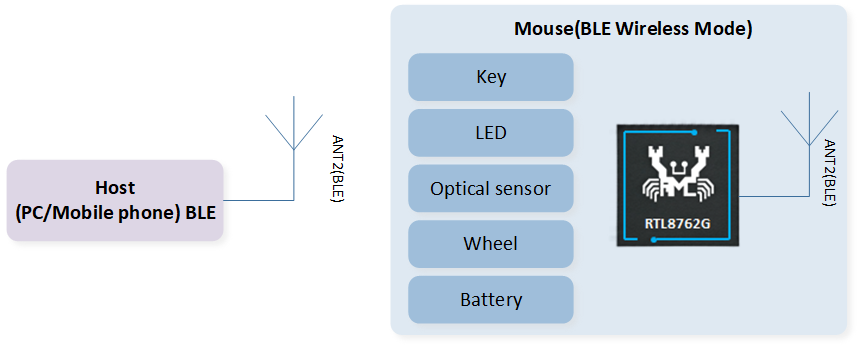
BLE Wireless Mode Structure Diagram
2.4G Wireless Mode
The RTL87x2G mouse can communicate with the dongle through 2.4G proprietary protocol, and the dongle communicates with the host through USB.

2.4G Wireless Mode Structure Diagram
USB Wired Mode
The RTL87x2G mouse can communicate with the host through USB, supporting full/high-speed USB.

USB Mode Structure Diagram
Supported Features
Support three communication modes: BLE/2.4G/USB
The maximum reporting rate for the BLE/2.4G/USB modes is 125Hz/4KHz/8KHz
Support Full/High-speed USB
Support GPIO and Keyscan buttons, with the ability to expand Keyscan to a maximum of 240 buttons (12x20)
Support hardware QDEC (Quadrature Decoder)
Support PWM output for LED control
Support battery level detection
Support USB-based Device Firmware Upgrade (DFU) functionality
Requirements
RTL87x2G EVB
RTL87x2G tri-mode mouse
ARM Keil MDK: https://developer.arm.com (uVision V5.36, ARMCC: V6.17)
MPTool_kits:
SDK-MOUSE-vx.x.x.x\tools\MPToolDebugAnalyzer:
SDK-MOUSE-vx.x.x.x\tools\DebugAnalyzerCFUDownloadTool:
SDK-MOUSE-vx.x.x.x\tools\CFUDownloadToolMPPackTool:
SDK-MOUSE-vx.x.x.x\tools\MPTool\MPTool\tools\MPPackTool
Hardware Requirements Introduction
Realtek offers two hardware development environments. Users can choose one to develop Tri-Mode Mouse SDK.
Tool Requirements Introduction
The installation packages in the \tools directory are in .zip format. Users need to decompress them.
ARM Keil MDK
All applications in the SDK can be compiled and used through the Keil Microcontroller Development Kit (MDK). So before starting software development, it is necessary to first obtain and install Keil. For more information about Keil, please visit http://www.keil.com.
For source code compilation, the version information of KEIL toolchain used by Realtek is shown in Keil Version Information. To avoid compatibility issues between ROM executables and applications, it is recommended to use uVision V5.36 or later and configure the ARMCLANG default compiler to compiler 6.17, as shown in Keil Parameter Configuration.

Keil Version Information
{kind=link}
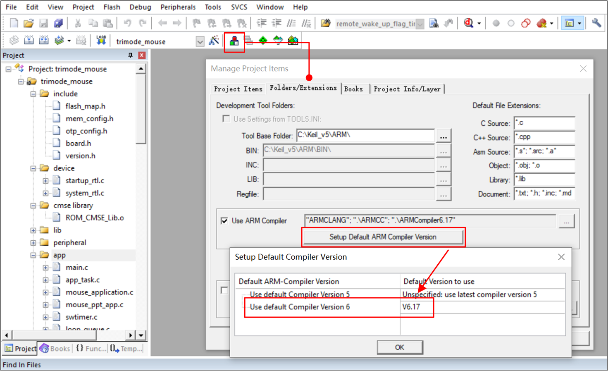
Keil Parameter Configuration
MP Tool
For user program downloading, refer to MP Tool Download. The path for the download files is SDK-MOUSE-vx.x.x.x\download_images.
Note
When selecting the System Config File, pay attention to the file prefix. log_close indicates that there is no Log output when the device is working, and log_open indicates that the Log is synchronized when the device is working, as shown in Config File Log Prefix.
For more detailed usage instructions, refer to the user guide in the SDK tool directory, or visit the RealMCU platform to obtain the corresponding tools and consult the provided documentation.

Config File Log Prefix
DebugAnalyzer
For user acquisition and parsing of SoC Log, refer to DebugAnalyzer Introduction.
Note
Make sure the .trace file matches the current SoC running code. If users encounter problems during the development process, please provide .trace file and .log & .bin & .cfa file in the path of
DebugAnalyzer\DataFilefor Realtek to parse and locate the problem.For more detailed usage instructions, refer to the user guide in the SDK tool directory, or visit the RealMCU platform to obtain the corresponding tools and consult the provided documentation.
MPPack Tool
- Users can use MPPackTool to package device upgrade files.Path:
SDK-MOUSE-vx.x.x.x \tools\MPTool\MPTool\tools\MPPackTool, as shown in the following figure.

MPPackTool.exe
Double-click
MPPackTool.exe, IC Type choose RTL87x2G_VB, choose ForCFU, click Browse, select the files that users want to upgrade, for example,Bank0 Boot Patch ImageandBank0 BT Stack Patch Image, as shown in the following figure.

MPPackTool Panel
Hint
The size of the files to be upgraded cannot exceed the size of the OTA Tmp area (refer to flash_map.h in the project). If the size of the total files to be upgraded exceeds the OTA Tmp area, package them in batches and upgrade them one by one. Since Patch, Upperstack and other files are rarely updated, users generally only need to package the APP Image separately.
- After the file is loaded, click Confirm,
ImaPacketFile.offer.binandImgPacketFile.payload.binwill be generated, as shown in the following figure.Path:SDK-MOUSE-vx.x.x.x\tools\MPTool_x.x.x.x\MPTool\tools

MPPackTool File Packaging Confirmation
Note
If save patch is selected, the user can select the directory for saving the CFU file. By default, the CFU file is saved in the root directory.
For packaging mass production programming files and more detailed usage instructions, refer to the user guide in the SDK tool directory. Users can also visit the RealMCU platform to access the corresponding tools and review the provided documentation.
CFUDownloadTool
- Users can use CFUDownloadTool to upgrade the device through the USB interface.Path:
SDK-MOUSE-vx.x.x.x\tools\CFUDownloadTool, tool version not less than V2.0.2.0, as shown below.
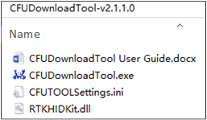
CFUDownloadTool
Open
CFUTOOLSettings.iniand set parameters for the upgrade device as shown below.The RTL87x2G upgrade mode uses CFU_VIA_USB_HID
Mouse: Vid=0x0BDA, Pid=0x4762
Dongle: Vid=0x0BDA, Pid=0x4762
[CFU_VIA_USB_HID]
Vid=0x0bda
Pid=0x4762
UsagePage=0xff0b
UsageTlc=0x0104
[CFU_EARBUD_VIA_BT_HID]
Vid=0x005d
Pid=
UsagePage=0xff0b
UsageTlc=0x0104
[CFU_EARBUD_VIA_DONGLE]
Vid=0x0bda
Pid=0x4762
UsagePage=0xff07
UsageTlc=0x0212
[ICTypeSelect]
TYPE=1
[CFUTypeSelect]
Type=0
[MainSetting]
ImageDir=SDK-MOUSE-vx.x.x.x\applications\trimode_mouse\proj\mdk\images\app\cfu
TransDelay=0
TransTimeout=200
ForceReset=1
[DEVICE]
SerialNumber=
Hint
If the configured Vid and Pid are different from those set by Mouse/Dongle, CFUDownloadTool will not recognize the device.
TransDelay can set the delay time between two data packets.
TransTimeout can set the response timeout period.
By setting the Serial Number, it is possible to distinguish between upgrading dongle or mouse through the VID and PID. If the setting is null, it means no distinction is made.
Double-click CFUDownloadTool.exe, as shown below.
IC Type: RTL87x2G
CFU Type: CFU via USB HID

CFU Download Tool Interface
Connect the device to the computer if the device is successfully identified, as shown below.
'Found 1 device' will be displayed on the right of the page.
'FwVersion' indicates the App Image version of the current Mouse/Dongle.
'Current Bank 2' indicates the Single Bank upgrade scheme (currently, only this scheme is supported).

CFU Download Tool Device Identification Panel
At CFU Image, load the folder where the file to be upgraded resides, as shown in CFU Download Tool Device Identification Panel and CFU Files.
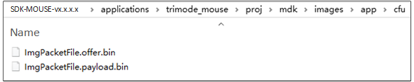
CFU Files
Click Download, the progress bar will display the download progress of the current program, and 'OK' will be displayed when the download is complete, as shown in CFU Files Download Succeed. After CFU is complete, click Get Device, and the current Image version will be displayed on the right FwVersion to ensure the successful upgrade.

CFU Files Download Succeed
Wiring
RTL87x2G EVB
The EVB evaluation board provides a hardware environment for user development and application debugging. The EVB consists of a motherboard and a daughterboard. It has Download mode and Normal mode. Refer to Quick Start.
RTL87x2G Tri-Mode Mouse
{kind=link}
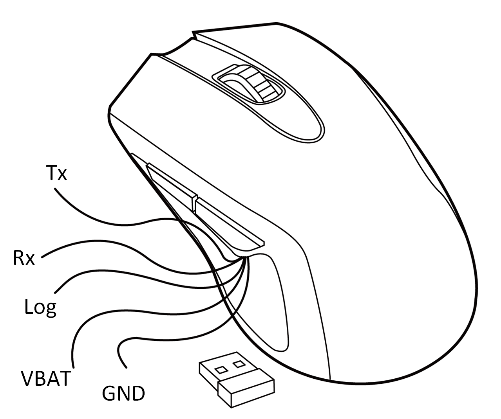
Tri-Mode Mouse Device
Download Mode
Before powering on the device, the Log Pin of the device needs to be grounded. The Log Pin and GND Pin of the device, as well as the GND of the FT232 Serial Port Board, should all share a common ground. Tx of the device connects to Rx of the serial interface board, and Rx connects to the Tx of the serial interface board. VBAT connects to the 3.3V power supply, and the serial port board connects to the PC for power.
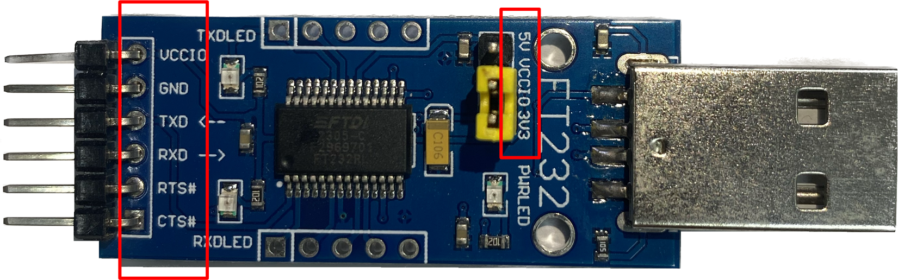
FT232 Serial Port Board
After entering the download mode, refer to MP Tool to download the program:
The chip will read the level signal of the Log Pin after power-on. If the level is low, the chip will bypass Flash and enter the download mode. Otherwise, the application layer program will run.
Because the chip downloading needs to use 1M baud rate, an FT232 serial interface board must be used, as shown in the following figure, otherwise UART Open Fail may occur.
{kind=link}
Log Cables
The Log Pin from the device connects to the Rx of the serial interface board, while the GND from the device connects to the GND of the serial interface board. The computer needs to be connected to the device to power it. Once connected, refer to DebugAnalyzer for the Log output.
Configurations
The default main configurations of the tri-mode mouse application in the SDK are shown in the following table.
Macro Definition |
Function Description |
|---|---|
FEATURE_RAM_CODE |
Default 1, configure whether all code should be copied to RAM for execution. |
FEAUTRE_SUPPORT_FLASH_2_BIT_MODE |
Default 0, configure whether to run flash in 2-bit mode. |
FEATURE_SUPPORT_NO_ACTION_DISCONN |
Default 1, configure whether to enable the no-action disconnection mechanism. |
FEATURE_SUPPORT_AUTO_PAIR_WHEN_POWER_ON |
Default 0, configure whether to automatically trigger pairing when the mouse is powered on. |
FEATURE_SUPPORT_APP_ACTIVE_FTL_GC |
Default 1, configure whether to allow the APP to actively trigger FTL garbage collection. |
FEATURE_SUPPORT_AUTO_TEST |
Default 0, configure whether to enable automatic testing. |
ENABLE_2_4G_LOG |
Default 0, configure whether to enable the 2.4G stack log. |
They will be detailed in subsequent chapters. |
#define MOUSE_GPIO_BUTTON_EN 1
#define MOUSE_KEYSCAN_EN 0
#define MODE_MONITOR_EN 1
#define PAW3395_SENSOR_EN 1
#define AON_QDEC_EN 1
#define GPIO_QDEC_EN 0
#define SUPPORT_LED_INDICATION_FEATURE 1
#define LED_FOR_TEST 0
#define SUPPORT_BAT_DETECT_FEATURE 1
#define DLPS_EN 1
Building and Downloading
Refer to Quick Start - Compilation and Download for more information.
Generating Flash Map
In the step Generating Flash Map, users need to generate flash_map.ini and OTA Header based on SDK-MOUSE-vx.x.x.x\applications\trimode_mouse\proj\flash_map.h.
Generating System Config File
In the step Generating System Config File, other settings such as Tx power can be configured as needed.
Generating App Image
In the step Generating App Image, the path of the tri-mode mouse SDK Keil project is SDK-MOUSE-vx.x.x.x\applications\trimode_mouse\proj\mdk, where APP image is compiled.
Compile by KEIL
There are two targets in the Keil project that use different 2.4G proprietary protocols. Please select the correct target for compilation. The targets without the suffix '_hopping' are compiled by default, following the sync protocol. For more details, refer to 2.4G Protocol Documentation. On the other hand, the targets with the suffix '_hopping' utilize the sync5 protocol, which can achieve scanning band and frequency hopping functions.
Important
The mouse and dongle must both use the target without the '_hopping' suffix, or both switch to the hopping target as shown in the diagram. Otherwise, 2.4G pairing cannot be completed.
{kind=link}
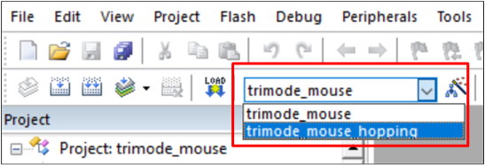
Mouse Target Switchover

Dongle Target Switchover
Name |
Location |
|---|---|
Mouse application |
SDK-MOUSE-vx.x.x.x\applications\trimode_mouse |
Dongle application |
SDK-MOUSE-vx.x.x.x\applications\ppt_dongle |
2.4G sync protocol |
SDK-MOUSE-vx.x.x.x\subsys\ppt\sync |
2.4G sync5 protocol |
SDK-MOUSE-vx.x.x.x\subsys\ppt\sync5 |
After the project compilation is successful, in the \bin folder, a .bin file with MP prefix and the corresponding .trace file are generated synchronously, as shown below. Users can download APP Image through MPTool and load the .trace file to analyze Log in DebugAnalyzer.

Project Compile Generate File
Compile by GCC
Before compiling by GCC, refer to the chapter Quick Start - GCC for proper environment configuration.
Once the environment setting is done, access mingw64\bin, make a copy of mingw32-make.exe, and rename the copied file to 'make.exe'.
For using GCC compilation, access the location of the Makefile file and open a bash to execute the make command. The locations of Makefile are in the following directories:
Dongle project:
SDK-MOUSE-vx.x.x.x\applications\ppt_dongle\proj\gccMouse project:
SDK-MOUSE-vx.x.x.x\applications\trimode_mouse\proj\gcc

Location of Makefile
- For hopping project compilation, users should define ppt_transport=enable after the make command in the command line. If users want to generate a non-hopping image, simply input make in the command line. The complete command for compiling the dongle_hopping project and trimode_mouse_hopping project is as follows:
make ppt_transport=enable
Once the compiling process is complete, an APP image bin file with the MP prefix and the corresponding APP trace file are generated in the \bin folder. Different from compiling the image by KEIL, the project compiled by GCC will generate an image with the word 'hopping' in the file name. The contents of \bin are shown in the following figure.
Location of APP Image Bin
If users want to rebuild an APP image, make sure to execute the make clean command before rebuilding the image by GCC.Other than typing commands in the command line, users can simply executebuild_all_target.shunder the gcc folder. The \bin folder will simultaneously generate APP images of two targets and related files. The contents of \bin are shown in the following figure../build_all_target.sh
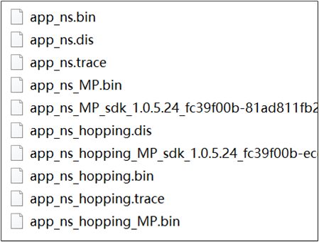
Contents after the Compilation of the Shell Script
{kind=link}
Download Files
Download by MP Tool
Refer to MP Tool for downloading files.
Download by J-Link
J-Link supports various connection interfaces such as JTAG, SWD, etc. Due to SWD requiring fewer connections, the RTL87x2G utilizes this interface: RTL87x2G - SWD Corresponding Interface. Additionally, J-Link is compatible with multiple development environments and IDEs such as Keil MDK, IAR Embedded Workbench, etc. The setup instructions for the Keil environment can refer to Platform Overview.
J-Link Software v6.44 (or later) is recommended, for more information, refer to Quick Start.
RTL87x2G |
SWD |
|---|---|
GND |
GND |
P1_0 |
SWIO |
P1_1 |
SWCK |
VDDIO |
Vterf/3.3V |
Experimental Verification
Experimental Verification of Prototype Mouse
Code Modification for Prototype Mouse
If the prototype mouse is used for experimental verification, Users can directly compile the APP Image. The SDK supports the use of a 6-button mouse by default. Users can also modify macro definitions in board.h to select specifications for the 7-button or 8-button mouse. For the programming process, please refer to RTL87x2G Tri-Mode Mouse.
#define MOUSE_6_KEYS 0
#define MOUSE_7_KEYS 1
#define MOUSE_8_KEYS 2
#define MOUSE_EVB_MODE 3
#define MOUSE_HW_SEL MOUSE_6_KEYS
Log Capture and Analysis of Prototype Mouse
Users can use DebugAnalyzer to check the Log to see if the program is running properly. Refer to DebugAnalyzer for Log output. A brief explanation of the critical logs in three modes is as follows.
BLE mode:
GAP stack ready means GAP layer has been initialized completely.
If GAP adv start can be searched, it means that the mouse has started broadcasting.
Users can determine whether the current pairing is successful or failed by searching for GAP_AUTHEN_STATE_COMPLETE .
Log example is as follows.
[APP] !**GAP stack ready ...... [APP] !**[mouse_start_adv] mouse start ADV_UNDIRECT_PAIRING success! [APP] periph_handle_gap_msg: subtype 1 [APP] !**periph_handle_dev_state_evt: init state 1, adv state 1, conn state 0, cause 0x0 [APP] periph_handle_gap_msg: subtype 1 [APP] !**periph_handle_dev_state_evt: init state 1, adv state 2, conn state 0, cause 0x0 [APP] !**GAP adv start ...... [APP] !**[GAP_AUTHEN_STATE_COMPLETE] pairing success
2.4G mode:
ppt_pair means pairing has started.
ppt_reconnect means that the mouse is reconnecting.
SYNC_EVENT_CONNECTED means the connection has been established successfully.
Log example is as follows.
[APP] !**ppt_pair [APP] !**sync: speed 125us high 250us, scheme 0-0-0-0, tx cb 0x0 [APP] !**sync: start pair! ...... [APP] !**[ppt_app_sync_event_cb] SYNC_EVENT_PAIRED [APP] !**[ppt_app_sync_event_cb] SYNC_EVENT_CONNECTED ...... [APP] !**sync: lost! [APP] !**sync: disconnected! [APP] !**[ppt_app_sync_event_cb] SYNC_EVENT_CONNECT_LOST [APP] !**ppt_reconnect ...... [APP] !**[ppt_app_sync_event_cb] SYNC_EVENT_CONNECTED
USB mode:
[app_usb_state_change_cb] state: 5 represents USB enumeration is successful.
[app_usb_speed_cb] speed: indicates USB speed. 0 is Full Speed and 1 is High Speed.
Log example is as follows.
[USB] !**dwc_otg_pcd_handle_enum_done_intr: dcfg = 8920000 [USB] !!!dwc_otg_pcd_handle_enum_done_intr: HIGH SPEED [USB] dwc_otg_ep0_activate: dsts.enumspd = 0, dsts.mps = 0x0 [APP] !**[app_usb_speed_cb] speed: 1 [APP] !**High speed ...... [APP] !**[app_usb_state_change_cb] state: 5 [APP] !**[app_usb_state_change_cb] usb waked up
Experimental Verification of EVB
Code Modification for EVB
Some functions in the code need to be realized by the prototype mouse, such as: LED display/key operation/wheel operation, etc. If the APP Image is downloaded to EVB (non-mouse prototype), in order to ensure the normal operation of the program, refer to the following code modification instructions:
Mouse EVB:
SDK-MOUSE-vx.x.x.x\applications\trimode_mouse\proj\mdk.Modify the following definition in
board.h.#define MOUSE_HW_SEL MOUSE_EVB_MODEModify the AUTO_TEST_USE_ROUND_DATA macro in
board.hto control whether the pattern is square or round. When set to 1, the pattern is round.#define AUTO_TEST_USE_ROUND_DATA 1
Dongle:
SDK-MOUSE-vx.x.x.x\applications\ppt_dongle\proj\mdk.The Dongle program does not need to be modified. Pairing is enabled by default after power-on.
After the program is compiled, refer to RTL87x2G EVB to confirm the hardware environment. Refer to MP Tool to download the program.
After completing the above two modifications, you can directly verify the 2.4G mode. If you want to test the other two modes, you need to modify the macros in
board.h.#define MOUSE_EVB_TEST_MODE_USB 0 #define MOUSE_EVB_TEST_MODE_BLE 1 #define MOUSE_EVB_TEST_MODE_PPT 2 #define MOUSE_EVB_TEST_MODE MOUSE_EVB_TEST_MODE_PPT
Note
When the Mouse EVB is in 2.4G mode, it needs to be powered on earlier than the Dongle.
Log Capture and Analysis of EVB
The key log of the EVB is roughly the same as that of the prototype mouse. Refer to Log Capture and Analysis of Prototype Mouse.
Software Design Introduction
This chapter mainly introduces the software-related technical parameters and behavior specifications of the RTL87x2G Tri-Mode Mouse solution. It provides a software overview for all the Tri-Mode Mouse features, which include three modes, button, wheel, optical sensor, power detection and charging, light effect, production testing and other behavior specifications, which are used to guide the development of Tri-Mode Mouse and trace the problems encountered in software testing.
Source Code Directory
Project directory:
sdk\applications\trimode_mouse\projSource code directory:
sdk\applications\trimode_mouse\src
Source files in Tri-Mode Mouse application project are currently categorized into several groups as below.
└── Project: trimode_mouse
├── include
└── Device includes startup code
├── startup_rtl.c
└── system_rtl.c
├── CMSE Library Non-secure callable lib
├── Lib includes all binary symbol files that user application is built on
├── Peripheral includes all peripheral drivers and module code used by the application
└── APP includes the tri-mode mouse user application implementation
├── main.c
├── app_task.c
├── mouse_application.c
├── mouse_ppt_app.c
├── swtimer.c
├── loop_queue.c
└── mouse_ppt_trans_handle.c only compiled in hopping targets
└── ble includes BLE services and the tri-mode mouse bluetooth app
├── bas.c
├── dis.c
├── hid_ms.c
├── privacy_mgnt.c
└── mouse_gap.c
└── ppt includes 2.4G module interfaces for application
└── ppt_sync_app.c
└── ppt_trans includes 2.4G transport layer interfaces to application and only compiled in hopping targets
└── usb includes usb module settings for tri-mode mouse application
├── usb_device.c
├── usb_hid_interface_mouse.c
├── usb_hid_interface_keyboard.c
├── usb_hid_interface_dfu.c
└── usb_handle.c
└── mode_monitor includes the implementation of tri-mode mouse mode monitor module
├── mode_monitor_driver.c
└── mode_monitor_handle.c
└── mouse_button includes button module files implemented by gpio and keyscan
├── mouse_gpio_button_driver.c
├── mouse_keyscan_driver.c
├── mouse_button_handle.c
└── mouse_button_sw_debounce_handle.c
└── paw3395 includes the implementation of paw3395 sensor module
├── paw3395_driver.c
└── paw3395_handle.c
└── qdec includes the implementation of qdec module
├── qdec_driver.c
├── gpio_qdec_driver.c
└── qdec_handle.c
└── led includes led module files implemented by gpio and hardware timer
├── led_gpio_ctl_driver.c
├── led_hw_tim_pwm_driver.c
└── led_driver.c
└── battery includes battery module interfaces to tri-mode mouse
└── battery_driver.c
└── dfu includes the implementation of usb dfu protocol
├── usb_dfu.c
└── dfu_common.c
└── mp_test includes mp test module interfaces to tri-mode mouse
├── hci_transport_if.c
├── rf_test_mode.c
├── mp_test.c
└── single_tone.c
Flash Layout
Application default flash layout header file: sdk\applications\trimode_mouse\proj\flash_map.h.
Example layout with a total flash size of 1MB |
Size(byte) |
Start Address |
|---|---|---|
Reserved |
4K |
0x04000000 |
OEM Header |
4K |
0x04001000 |
Bank0 Boot Patch |
32K |
0x04002000 |
Bank1 Boot Patch |
32K |
0x0400A000 |
OTA Bank0 |
620K |
0x04012000 |
|
4K |
0x04012000 |
|
32K |
0x04013000 |
|
60K |
0x0401B000 |
|
212K |
0x0402A000 |
|
308K |
0x0405F000 |
|
4K |
0x040AC000 |
|
0K |
0x040AD000 |
|
0K |
0x040AD000 |
|
0K |
0x040AD000 |
|
0K |
0x040AD000 |
|
0K |
0x040AD000 |
|
0K |
0x040AD000 |
OTA Bank1 |
0K |
0x040AD000 |
Bank0 Secure APP code |
0K |
0x040AD000 |
Bank0 Secure APP Data |
0K |
0x040AD000 |
Bank1 Secure APP code |
0K |
0x040AD000 |
Bank1 Secure APP Data |
0K |
0x040AD000 |
OTA Temp |
312K |
0x040AD000 |
FTL |
16K |
0x040FB000 |
APP Defined Section1 |
4K |
0x040FF000 |
APP Defined Section2 |
0K |
0x04100000 |
Important
To adjust Flash layout, follow the steps listed on the Generating Flash Map in Quick Start.
After Flash layout adjustment, follow the steps listed on the Generating OTA Header and Generating System Config File with new flash layout file.
After Flash layout adjustment, replace
SDK\applications\findmy\proj\flash_map.hwith the newflash_map.hand redo the Generating App Image step.
Software Architecture
The software architecture of the system is shown below.

Tri-Mode Mouse Software Architecture
Platform: Includes OTA, Flash, FTL and etc.
IO Drivers: Provide application layer access to the interface of RTL87x2G peripherals.
OSIF: Abstraction layer for real-time operating systems.
GAP: Abstraction layer which user application communicates with BLE stack.
Task and Priority
As shown below, six tasks have been created for the user application:

Tasks
The description of each task and its priority is shown in the table below.
Task |
Description |
Priority |
|---|---|---|
Timer |
Implement the software timer required by FreeRTOS |
6 |
BT Controller stack |
Implement BT stack protocols below HCI |
6 |
BT Host stack |
Implement BT stack protocols above HCI |
5 |
USB |
Handle USB Data Interaction |
3 |
Application |
Handle user application requirements and interact with the stack |
2 |
Idle |
Run background tasks including DLPS |
0 |
Note
Multiple application tasks can be created, and memory resources will be allocated accordingly.
Idle tasks and timer tasks are provided by FreeRTOS.
Tasks have been configured to be preemptive based on their priority using the SysTick interrupt.
Interrupt Service Routines (ISR) have been implemented by the vendor.
Application Initialization Process Flow
After the mouse is powered on, the application's initialization process mainly includes the functions main() and app_main_task(). There are some differences in the initialization process of BLE/2.4G/USB modes.
Function main()
The initialization process in main() includes Flash mode settings, SWD settings, global variable initialization, pin initialization, driver module initialization, BLE/2.4G/USB mode initialization, power mode initialization, software timer initialization, watchdog initialization, as well as app task initialization and enable task scheduling.
{kind=link}
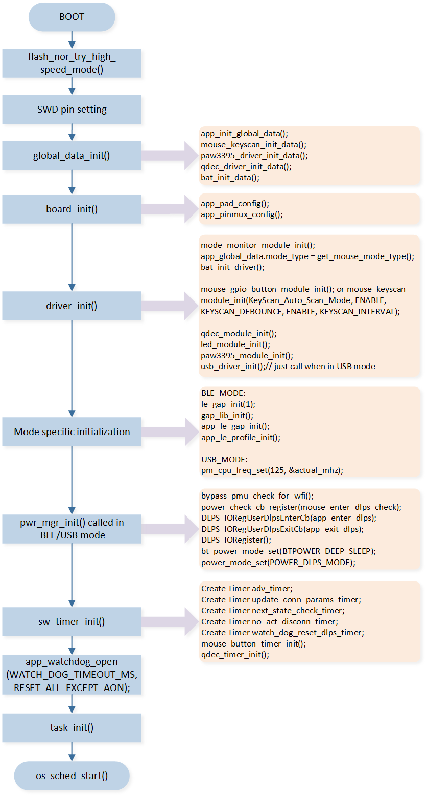
Initializations in main()
Function description |
|
|---|---|
The default mode is 1-bit mode. If FEATURE_SUPPORT_FLASH_2_BIT_MODE is set to 1, it can be configured as 2-bit mode by using the interface. Although 2-bit mode allows for faster flash operations, it also increases static power consumption. Since most of the code runs in RAM and flash operations are less frequent in typical usage scenarios, it is recommended to use 1-bit mode. |
|
SWD can be used as a debugging tool for CPU during active mode, allowing for features like single-step debugging. It requires the use of pins P1_0 and P1_1. To enable SWD functionality, the SWD_ENABLE macro needs to be set to 1. If SWD is not used or P1_0 or P1_1 is needed, the macro SWD_ENABLE should be set to 0, disabling P1_0 and P1_1 via the API. |
|
|
Initializes all the global variables required by various modules. |
|
Initializes the PAD settings and Pinmux settings for various peripheral modules. |
|
Initializes the driver configurations of various modules, including identifying and obtaining the current mode of the mouse, whether it is BLE, 2.4G, or USB. If the current mode is USB, the USB module needs to be initialized at the end. |
Mode specific initialization |
If in BLE mode, relevant initialization needs to be done, including |
|
If DLPS_EN is set to 0 or the mouse is in USB mode, it is set to Active mode, and |
|
Initializes software timers. |
|
Enable the watchdog. The watchdog timeout reset time can be set via the macro WATCH_DOG_TIMEOUT_MS, with a default of 5 seconds. |
|
Initializes app task. |
Enable task scheduling. |
Function app_main_task()
In addition to the initialization process included in main(), the app task created in main() also includes some initialization content. When task scheduling starts, it will enter app_main_task() . In app_main_task() , the task stack is allocated and the task message queue is created, followed by initialization based on different modes:
2.4G mode: For 2.4G mode, it includes initialization of 2.4G, power mode initialization, enabling 2.4G, and NVIC enabling.
BLE mode: The message queue is synchronized with the upper stack. NVIC is enabled after the upper stack initialization is completed. This is done in
app_handle_dev_state_evt()where the NVIC is enabled when the GAP_INIT_STATE_STACK_READY state is reached.USB mode: enable USB, enable NVIC.
{kind=link}
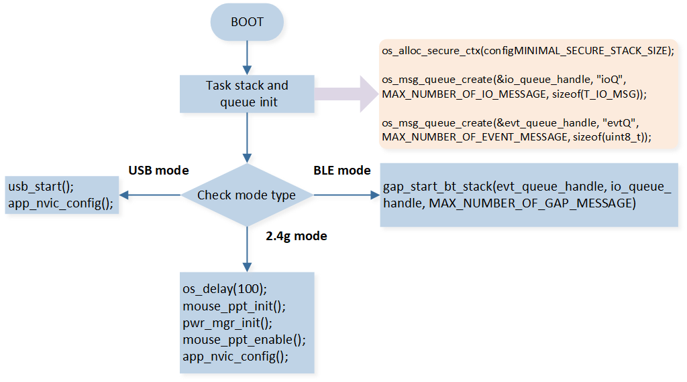
Initializations in app_main_task()
Message and Event Handling Flow
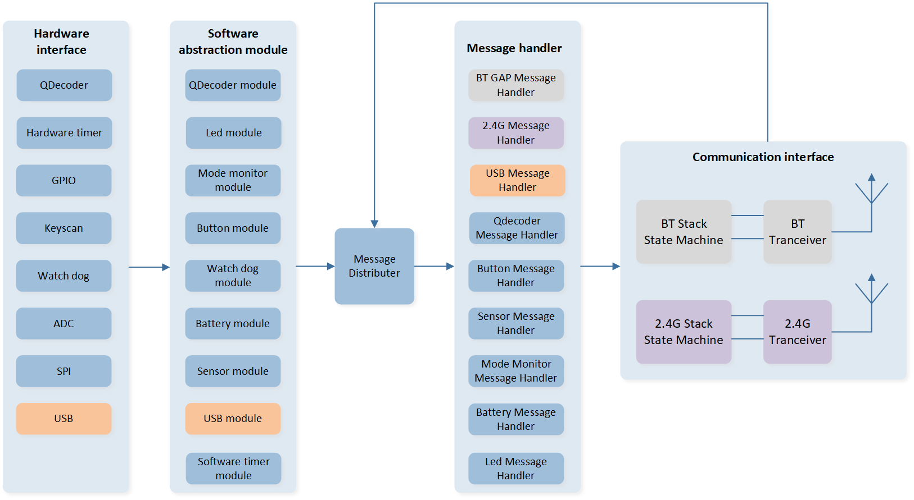
Tri-Mode Mouse Message Handling Flow
Module |
Instruction |
|---|---|
Qdecoder module |
Wheel module |
LED module |
LED light effect module |
Mode monitor module |
Mode switching module, identifying and timely switching mouse transmission mode (BLE/2.4G/USB mode) |
Button module |
Key module, supporting GPIO and Keyscan buttons |
Sensor module |
Optical sensor module, this article takes PAW3395 as an example |
Battery module |
Battery module, including timed detection of battery level, handling of low battery levels, etc. |
USB module |
USB module, supporting full/high speed USB |
Watchdog module |
Watchdog module, including two types of watchdog in CPU active and DLPS state |
The overall software system framework diagram for mouse applications is shown above. The SDK uses a software abstraction layer to access and configure the status, behavior, and data of each peripheral module. Actions or data that require immediate processing are handled directly within the interrupt service routines of the corresponding peripherals. Actions or data with lower real-time requirements are sent as messages to the app task, and they are processed in the message handling functions once the app task is scheduled.
Taking the button module as an example, the processing and sending of button data are handled within the corresponding interrupt service routine. However, the recognition and processing of compound keys or other similar tasks are sent to the app task for processing through the messaging mechanism.
GAP layer notifies APP layer with MSG and Event mechanism, while APP layer calls GAP layer function by APIs. For detailed GAP message/event description in gap_handle_msg().
State Machine
Switching Transmission Mode between BLE, 2.4G and USB Mode
Determine the Position of the Mode Selection
The mode selection can be moved to three positions: OFF, BLE mode and 2.4G mode. The relevant pins are defined in board.h:
#define MODE_MONITOR_EN
#if MODE_MONITOR_EN
#define BLE_MODE_MONITOR XI32K
#define BLE_MODE_MONITOR_IRQ GPIOA17_IRQn
#define ble_mode_monitor_int_handler GPIOA17_Handler
#define PPT_MODE_MONITOR XO32K
#define PPT_MODE_MONITOR_IRQ GPIOA18_IRQn
#define ppt_mode_monitor_int_handler GPIOA18_Handler
#define USB_MODE_MONITOR P1_2
#define USB_MODE_MONITOR_IRQ GPIOA10_IRQn
#define usb_mode_monitor_int_handler GPIOA10_Handler
#endif
The current position of the switch is determined based on the levels of BLE_MODE_MONITOR and PPT_MODE_MONITOR:
If BLE_MODE_MONITOR is low and PPT_MODE_MONITOR is high, the switch is in BLE mode.
If BLE_MODE_MONITOR is high and PPT_MODE_MONITOR is low, the switch is in 2.4G mode.
If BLE_MODE_MONITOR and PPT_MODE_MONITOR are both high, the switch is in the middle 'OFF' position.
The presence of a USB connection is determined based on the level of USB_MODE_MONITOR. When USB_MODE_MONITOR is high, it indicates that USB is plugged in. The relevant checks and handling for this are done in mode_monitor_driver.c and mode_monitor_handle.c.
Select the Mode Only According to the Position of the Switch
In board.h, the macro definition FEATURE_ALWAYS_IN_USB_MODE_WHTH_USB_INSET is set to 0, which means the mouse mode is fully determined by the position of the mode switch:
If the switch is in the BLE mode position, the mouse operates in BLE mode. The mode will not be switched even if USB is inserted, and the mouse will only be charged.
If the switch is in the 2.4G mode position, the mouse operates in 2.4G mode. The mode will not be switched even if USB is inserted, and the mouse will only be charged.
If the switch is in the OFF position and USB is inserted, the mouse operates in USB mode.
Always in USB Mode with USB Inserted
In board.h, when the macro definition FEATURE_ALWAYS_IN_USB_MODE_WHTH_USB_INSET is set to 1, the mode switching rules are as follows:
When USB is not inserted, the mouse mode is determined by the position of the mode switch.
When USB is inserted and successfully enumerated, regardless of the current mouse mode, the mouse will restart and enter USB mode.
When USB is inserted but fails to enumerate, the mouse will remain in the current mode without any changes and will only be charged.
BLE State Machine
{kind=link}
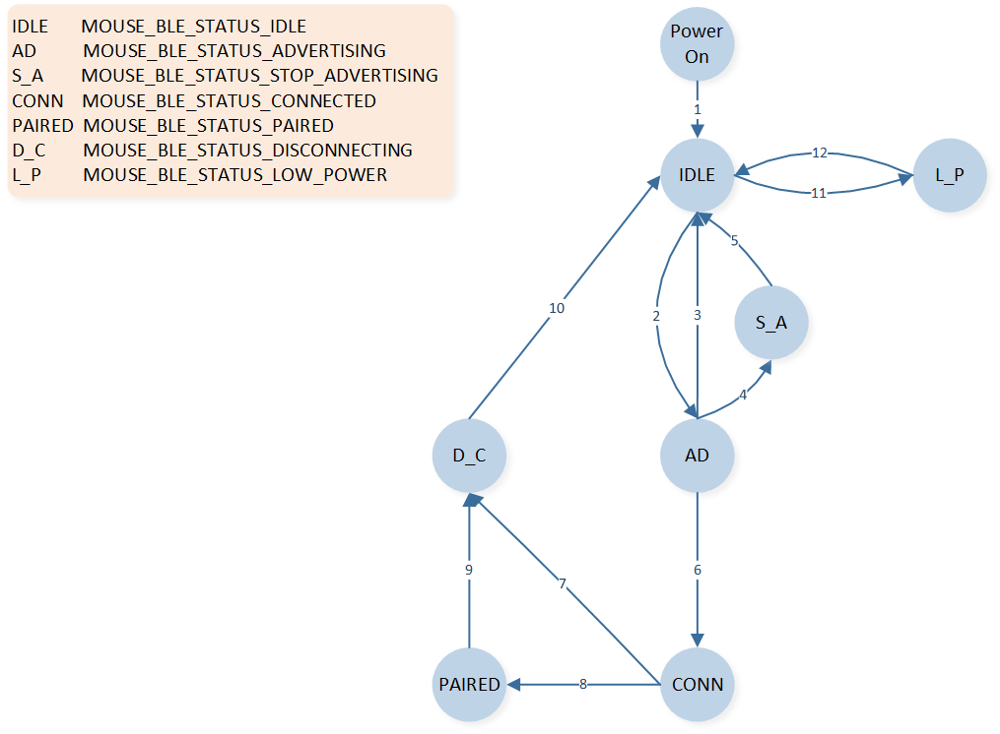
BLE Mode State Switching
Index |
Instruction |
|---|---|
1 |
Power On after GAP ready |
2 |
When APP calls le_adv_start in idle status |
3 |
High duty cycle direct advertising timeout, no connect request received |
4 |
When APP calls le_adv_stop in advertising status |
5 |
When BT stack sends GAP state change callback message from advertising to idle status |
6 |
When connection is established |
7 |
When connection terminates in connected status |
8 |
When pairing successfully in connected status |
9 |
When connection terminates in paired status |
10 |
When BT stack sends GAP state change callback message from connection to idle status |
11 |
When low power voltage is detected in idle status |
12 |
When normal power voltage is detected in low power status |
2.4G State Machine

2.4G Mode State Switching
Index |
Instruction |
|---|---|
1 |
Power On after 2.4G driver init |
2 |
When APP calls ppt_pair in idle status |
3 |
When pairing timeout, SYNC_EVENT_PAIR_TIMEOUT event received |
4 |
When pairing successfully, SYNC_EVENT_PAIRED event received |
5 |
When 2.4G link is lost in paired status, SYNC_EVENT_CONNECT_LOST event is received |
6 |
When APP calls ppt_reconnect in idle status |
7 |
When connecting timeout, SYNC_EVENT_PAIR_TIMEOUT event is received |
8 |
When connecting successfully in paired status, MOUSE_PPT_STATUS_CONNECTED event is received |
9 |
When connecting successfully, MOUSE_PPT_STATUS_CONNECTED event is received |
10 |
When 2.4G link is lost in connected status, SYNC_EVENT_CONNECT_LOST event is received |
11 |
When low power voltage is detected in idle status |
12 |
When normal power voltage is detected in low power status |
Timer
Software Timer
The default number of software timers that the app can use is 32. You can modify the number of software timers by adding the macro TIMER_MAX_NUMBER in otp_config.h. The current software timers used by the mouse are shown below.
Index |
Timer name |
Instruction |
|---|---|---|
1 |
adv_timer |
Used to stop advertising |
2 |
update_conn_params_timer |
Used for connection parameter update |
3 |
next_state_check_timer |
Used for checking state after BLE connected |
4 |
achieve_ble_service_timer |
Used to ensure enough time to achieve BLE service before enabling sensor |
5 |
no_act_disconn_timer |
For long periods of no operation, the BLE link will disconnect |
6 |
watch_dog_reset_dlps_timer |
Used to reset the watchdog regularly |
7 |
ble_mode_monitor_debounce_timer |
Used for gpio debounce of the BLE_MODE_MONITOR pin |
8 |
ppt_mode_monitor_debounce_timer |
Used for gpio debounce of the PPT_MODE_MONITOR pin |
9 |
usb_mode_monitor_debounce_timer |
Used for gpio debounce of the USB_MODE_MONITOR pin |
10 |
qdec_allow_enter_dlps_timer |
Used to avoid prolonged inability to enter DLPS caused by the roller module |
11 |
combine_keys_detection_timer |
Used to detect the combination keys |
12 |
long_press_key_detect_timer |
Used for detecting button long time press |
13 |
keys_press_check_timer |
Used to avoid prolonged inability to enter DLPS caused by the button module |
14 |
remote_wake_up_flag_timer |
Used to avoid USB from repeatedly remote wakeup |
15 |
led_gpio_ctrl_timer |
Used for the control of LEDs driven by PAD |
16 |
bat_detect_timer |
Used for timing detection of battery power |
17 |
cfu_status_check_timer |
Used for status checking when firmware is upgraded via USB |
18 |
single_tone_timer |
Start USB module after entering production testing mode |
19 |
single_tone_exit_timer |
Used when single tone implemented through HCI Layer |
Hardware Timer
There are two types of hardware timers available for the app to use: 8 regular HW Timers and 4 Enhanced Timers. For specific features, differences, and usage details, please refer to the datasheet. The current timers used in the mouse project are shown below.
Number |
Hardware Timer |
Description |
|---|---|---|
1 |
TIM0 |
Used by BLE protocol stack; can't be used by application |
2 |
TIM1 |
Used by BLE protocol stack; can't be used by application |
3 |
TIM2 |
Used by LED module to output PWM wave to control RGB LED |
4 |
TIM5 |
Used by application to read the x and y data of the optical sensor regularly |
5 |
TIM6 |
Used by LED module to check if it needs to change the state and color of RGB LEDs |
6 |
ENH_TIM0 |
Used by 2.4G protocol stack; can't be used by application |
7 |
ENH_TIM1 |
Used by 2.4G protocol stack; can't be used by application |
8 |
ENH_TIM2 |
Dongle: used by 2.4G protocol stack and cannot be used by dongle app. Mouse: not used by 2.4G protocol stack and can be used to output PWM waves to control the RGB LED by mouse app. |
9 |
ENH_TIM3 |
Used by LED module to output PWM waves to control RGB LED |
BLE Mode
BLE Initialization
Upon BLE mouse powering on, it needs to initialize Bluetooth-related content, which includes the following:
main()function:
The Bluetooth address, device name, default broadcast parameters, and binding-related parameters are all set in app_le_gap_init(). Service registration is performed in app_le_profile_init().
le_gap_init(1);
gap_lib_init();
app_le_gap_init();
app_le_profile_init();
app_main_task()function:
gap_start_bt_stack(evt_queue_handle, io_queue_handle, MAX_NUMBER_OF_GAP_MESSAGE);
app_handle_dev_state_evt()function:
After the BLE protocol stack initialization is complete, a message mechanism will notify the app, triggering the interface, where it retrieves paired information, sends reconnection broadcasts, and activates NVIC.
if (new_state.gap_init_state == GAP_INIT_STATE_STACK_READY)
{
APP_PRINT_INFO0("GAP stack ready");
......
}
HID Service
The main service in BLE mode is the HID service. The HID descriptor is defined by the array hids_report_descriptor in hids_ms.c.
BLE Advertising
Advertising Packet Format and Type
The advertising packets used by the mouse are all undirected advertising events. The AdvA field is the MAC address of the device, and the AdvData format is shown below.
{kind=link}
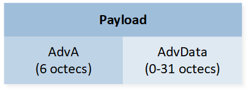
ADV_IND PDU Payload

Advertising and Scan Response Data Format
The mouse application sends advertisements by calling mouse_start_adv() and setting the advertisement type. The mouse advertisement types are listed below.
typedef enum
{
ADV_IDLE = 0,
ADV_DIRECT_HDC,
ADV_UNDIRECT_RECONNECT,
ADV_UNDIRECT_PAIRING,
} T_ADV_TYPE;
The mouse only uses two advertising types: ADV_UNDIRECT_PAIRING and ADV_UNDIRECT_RECONNECT. ADV_UNDIRECT_PAIRING is used for pairing and ADV_UNDIRECT_RECONNECT is used for reconnecting. ADV_DIRECT_HDC is not recommended for reconnecting because some computers or pads do not support it.
Pairing Advertising Packet
When the mouse is in pairing mode, it sends a pairing advertising packet to establish a connection with the paired device. The format of the pairing advertising packet is an undirected advertising packet. It is recommended to set the advertising interval range to 0x20 - 0x30 (which corresponds to 20ms - 30ms). The advertising timeout is set using the macro ADV_UNDIRECT_PAIRING_TIMEOUT and the default is 60 seconds. The specific contents of the advertising packet are shown below.
Flag Field (3 bytes) |
Appearance Field – Device type (4 bytes) |
Service Field (4 bytes) |
Local Name Field (<= 20 bytes) |
|---|---|---|---|
0x02, 0x01, 0x05 |
0x03, 0x19, 0xc2, 0x03 |
0x03, 0x03, 0x12, 0x18 |
C_DEVICE_NAME_LEN, 0x09, C_DEVICE_NAME |
C_DEVICE_NAME_LEN and C_DEVICE_NAME default to the following:
#define C_DEVICE_NAME 'B', 'L', 'E', '_', 'M', 'O', 'U', 'S', 'E', '(', '0', '0', ':', '0', '0', ')'
#define C_DEVICE_NAME_LEN (16+1) /* sizeof(C_DEVICE_NAME) + 1 */
Reconnection Advertising Packet
The macro definition FEATURE_SUPPORT_PRIVACY in the mouse application must be configured as 1 to enable random address resolution. The mouse adopts the Undirected Advertising + White List method for reconnection. It is recommended to set the advertising interval range to 0x20 - 0x30 (which corresponds to 20ms - 30ms). The advertising timeout is set using the macro ADV_UNDIRECT_RECONNECT_TIMEOUT , with a default value of 60 seconds. The specific contents of the advertising packet are shown below. It is recommended to set the Flags field as GAP_ADTYPE_FLAGS_BREDR_NOT_SUPPORTED (0x04) so that only devices that have previously paired with the mouse will display the advertising packet in the device list.
Flag Field (3 bytes) |
Appearance Field – Device type (4 bytes) |
Service Field (4 bytes) |
Local Name Field (<= 20 bytes) |
|---|---|---|---|
0x02, 0x01, 0x04 |
0x03, 0x19, 0xc2, 0x03 |
0x03, 0x03, 0x12, 0x18 |
C_DEVICE_NAME_LEN, 0x09, C_DEVICE_NAME |
Start and Stop Advertising
The mouse application sends advertising packets by calling mouse_start_adv(). Both the pairing and reconnection advertising packets are stopped by calling mouse_stop_adv():
typedef enum
{
STOP_ADV_REASON_IDLE = 0,
STOP_ADV_REASON_PAIRING,
STOP_ADV_REASON_TIMEOUT,
STOP_ADV_REASON_LOWPOWER,
} T_STOP_ADV_REASON;
Index |
Reason |
Introduction |
|---|---|---|
1 |
STOP_ADV_REASON_IDLE |
High duty direct advertisement is stopped |
2 |
STOP_ADV_REASON_PAIRING |
Stop current advertising for start pairing advertising |
3 |
STOP_ADV_REASON_TIMEOUT |
Stop advertising by calling le_adv_stop after undirect advertisement timeout |
4 |
STOP_ADV_REASON_LOWPOWER |
Stop advertising for low power mode |
There are different processes in app_stop_adv_reason_handler() for different reasons after stopping advertising.
BLE Connection and Pairing
BLE Pairing
There are two situations in which the mouse triggers pairing:
When the mouse does not have any pairing information:
By pressing and holding the combination of Left + Middle + Right buttons for 3 seconds, the mouse enters pairing mode and starts broadcasting the pairing signal to establish a connection with a device.
When the macro FEATURE_SUPPORT_AUTO_PAIR_WHEN_POWER_ON is configured as 1, the mouse enters pairing mode after power-up.
BLE Reconnection
The mouse uses reconnection advertising packets to quickly establish a connection with the paired device when it has saved pairing information. The mouse sends reconnection advertising packets in the following three scenarios:
On power-up: If the mouse was successfully paired and has saved pairing information, it will send reconnection advertising packets after the power-up initialization is complete to attempt reconnection.
Unexpected disconnection: If an unexpected disconnection occurs after the mouse and the paired device have established a connection (without either party actively disconnecting), the mouse will send reconnection advertising packets to attempt reconnection.
Active reconnection: If either the mouse or the paired device actively disconnects after establishing a connection, and the mouse is used again (e.g., moved, button pressed, scroll wheel activated), it will send reconnection advertising packets to attempt reconnection.
VID and PID
The default VID and PID in board.h for BLE are as follows:
#define C_VID 0x005D
#define C_PID 0x0426
Connection Parameters
The default connection parameters in mouse_application.h for BLE are as follows:
#define MOUSE_CONNECT_INTERVAL 0x06 /*0x06 * 1.25ms = 7.5ms*/
#define MOUSE_CONNECT_LATENCY 99
#define MOUSE_SUPERVISION_TIMEOUT 4500 /* 4.5s */
BLE Disconnection
The mouse and the paired device may experience disconnection in the following three scenarios:
Abnormal link conditions: In cases such as exceeding the connection range or the paired device losing power, the mouse will send reconnection advertising packets to attempt reconnection.
The paired device can actively disconnect from the mouse.
The mouse application can call
mouse_terminate_connection()to actively disconnect from the paired device.
The reasons for the mouse active disconnection are as follows:
typedef enum
{
DISCONN_REASON_IDLE = 0,
DISCONN_REASON_PAIRING,
DISCONN_REASON_TIMEOUT,
DISCONN_REASON_PAIR_FAILED,
DISCONN_REASON_LOW_POWER,
DISCONN_REASON_ADDRESS_SWITCH,
DISCONN_REASON_MOUSE_MODE_SWITCH_TO_USB,
} T_DISCONN_REASON;
Index |
Reason |
Introduction |
|---|---|---|
1 |
DISCONN_REASON_IDLE |
Default value |
2 |
DISCONN_REASON_PAIRING |
Terminate connection to start pairing advertisement |
3 |
DISCONN_REASON_TIMEOUT |
When the macro FEATURE_SUPPORT_NO_ACTION_DISCONN is set to 1, terminate connection for no operation timeout |
4 |
DISCONN_REASON_PAIR_FAILED |
Terminate connection for pairing failed |
5 |
DISCONN_REASON_LOW_POWER |
Terminate connection for low power mode |
6 |
DISCONN_REASON_ADDRESS_SWITCH |
Terminate connection to switch current static random address |
7 |
DISCONN_REASON_MOUSE_MODE_SWITCH_TO_USB |
When the macro FEATURE_ALWAYS_IN_USB_MODE_WHTH_USB_INSET is set to 1, insert USB cable and enumerate successfully in the wireless mode. |
There are different processes in app_disconn_reason_handler() for different reasons after active disconnection.
BLE Data Sending
Mouse data can be sent by calling app_ble_send_mouse_data(). The struct T_MOUSE_DATA is defined as follows:
typedef struct t_mouse_data
{
uint8_t button;
uint16_t x;
uint16_t y;
uint8_t v_wheel;
uint8_t h_wheel;
} T_MOUSE_DATA;
Other data, such as keyboard, consumer, or vendor data can be sent by calling app_ble_send_data().
Other Features
Privacy Feature Support
The macro FEATURE_SUPPORT_PRIVACY in board.h must be set to 1 to support the function of resolving peer device privacy address, so that the mouse can pair and connect with the devices with random address.
iOS Pairing
The macro FEATURE_SUPPORT_HIDS_CHAR_AUTHEN_REQ in board.h must be set to 1 so that the mouse can pair with the iOS devices.
Backup and Restore Pairing Information
When the macro definition FEATURE_SUPPORT_REMOVE_LINK_KEY_BEFORE_PAIRING is set to 1 in board.h, the mouse will first clear the existing pairing information before sending the pairing broadcast for pairing.
If both macro definitions FEATURE_SUPPORT_REMOVE_LINK_KEY_BEFORE_PAIRING and FEATURE_SUPPORT_RECOVER_PAIR_INFO are set to 1, the mouse will first backup the pairing information (including the mouse's own Static address) before clearing it. This backup is done to enable the mouse to restore the original pairing information and reconnect with the previously paired device in case of pairing failures (including but not limited to pairing timeout, pairing failure, and power loss during pairing). If the pairing is successful, the backup of the original pairing information will be cleared.
It is recommended to set both FEATURE_SUPPORT_REMOVE_LINK_KEY_BEFORE_PAIRING and FEATURE_SUPPORT_RECOVER_PAIR_INFO to 1.
Data Length Extension
When the macro definition FEATURE_SUPPORT_DATA_LENGTH_EXTENSION is set to 1 in board.h, the mouse and the connected device will actively request to update the data length of the link layer to 251. It is recommended to set this macro to 1 as it can improve the speed of interaction for long packets.
Not Check CCCD
When the macro definition FEATURE_SUPPORT_NO_CHECK_CCCD is set to 1 in board.h, the mouse and the connected device do not require the connected device to update the client characteristic configuration. The mouse can send notifications or indications without the need for the connected device to update the client characteristic configuration.
Address Type
The macro definition FEATURE_MAC_ADDR_TYPE in board.h can be configured to choose the Bluetooth address type used by the mouse. The options include: public address, single static address, and multiple switchable static addresses.
By default, the mouse uses a single static address.
#define FEATURE_SUPPORT_PUBLIC_ADDR 0 /* use public addr*/
#define FEATURE_SUPPORT_SINGLE_LOCAL_STATIC_ADDR 1 /* use single local random addr*/
#define FEATURE_SUPPORT_MULTIPLE_LOCAL_STATIC_ADDR 2 /* use multiple local random addr \*/
#define FEATURE_MAC_ADDR_TYPE FEATURE_SUPPORT_SINGLE_LOCAL_STATIC_ADDR
#if (FEATURE_MAC_ADDR_TYPE == FEATURE_SUPPORT_MULTIPLE_LOCAL_STATIC_ADDR)
#define APP_MAX_BOND_NUM 2
#endif
Public Address
When the macro definition FEATURE_MAC_ADDR_TYPE is configured as FEATURE_SUPPORT_PUBLIC_ADDR in board.h, the mouse uses a public address, which is the MAC address configured in the config file. When using this address, the mouse's address will not change during pairing. After successfully pairing with a remote device, if you want to re-pair with that device, it is necessary to first remove the pairing from the device list of the remote device before re-pairing. It is not recommended for the mouse to use a public address.
Single Static Address
When the macro definition FEATURE_MAC_ADDR_TYPE is configured as FEATURE_SUPPORT_SINGLE_LOCAL_STATIC_ADDR in board.h, the mouse uses a single static address.
During power-up, the mouse will generate a random static address based on the MAC address to pair and reconnect with the remote device. The current static address will not change until re-pairing occurs. If the mouse has already generated a static address and has paired with a particular device, when the mouse initiates re-pairing, it will generate a new static address as a new address.
Multiple Static Address
When the mouse needs to pair and connect with multiple devices and quickly switch between them, the macro definition FEATURE_MAC_ADDR_TYPE in board.h should be configured as FEATURE_SUPPORT_MULTIPLE_LOCAL_STATIC_ADDR . In this configuration, the mouse uses multiple switchable static addresses. The number of switchable addresses can be modified through the macro definition APP_MAX_BOND_NUM , with a default quantity of 2.
During power-up, the mouse will randomly generate multiple static addresses based on the MAC address as its own addresses for pairing and reconnecting with the remote devices. Each of these static addresses can be individually paired and connected with a device, just like a single static address. The multiple static addresses can be switched, which is equivalent to switching between already paired devices. By default, the combination of the middle + forward buttons is used to switch between multiple addresses.
BLE Tx Power
When the macro FEATURE_SUPPORT_APP_CFG_BLE_TX_POWER in board.h is set to 1 (default is 0), the tx power of the BLE mode can be individually configured. Otherwise, the tx power will be determined by the configuration in the config file.
2.4G Mode
2.4G Initialization
2.4G related initialization includes the following:
app_main_task():
if (app_global_data.mode_type == PPT_2_4G) { os_delay(100); mouse_ppt_init(); pwr_mgr_init(); mouse_ppt_enable(); app_nvic_config(); }
The os_delay is used to ensure that the 2.4G RF-related initialization is completed, and the 2.4G driver initialization can be started. The pwr_mgr_init() is power mode initialization, which must be called after mouse_ppt_init(). The mouse_ppt_enable() enables the 2.4G module.
The mouse_ppt_init() mainly includes:
Register callbacks, including
ppt_app_receive_msg_cb()will be called after data is received,ppt_app_send_msg_cb()will be called after sending data andppt_app_sync_event_cb()will be called when receiving 2.4G state event. 2.4G state event includes the following:
SYNC_EVENT_PAIRED: 2.4G is paired successfully.
SYNC_EVENT_PAIR_TIMEOUT: 2.4G pairing timeout.
SYNC_EVENT_CONNECTED: 2.4G connection is successfully established. When the mouse reconnects successfully, only SYNC_EVENT_CONNECTED will be generated. When the mouse pairs successfully, SYNC_EVENT_CONNECTED will be generated after SYNC_EVENT_PAIRED.
SYNC_EVENT_CONNECT_TIMEOUT: 2.4G connection timeout.
SYNC_EVENT_CONNECT_LOST: The link disconnects abnormally.
Get bonded information.
ppt_app_global_data.is_ppt_bond = ppt_check_is_bonded()sync_pair_rssi_set(): The default parameter is -65, indicating that RSSI must be greater than -65 dBm to allow pairing. Both the 2.4G master and slave can be configured separately.Set 2.4G transmission parameters.
Set transmission interval and retransmission interval:
mouse_ppt_set_sync_interval().Set heartbeat packet interval:
sync_master_set_hb_param().Set the CRC parameters, the length set in the SDK is 16 bits:
sync_crc_set().Set cache buffer depth for different 2.4G transmission types of data: The 2.4G driver can cache some sent data, and different data types have their own buffers.
/** * Different message types have different queue size, from left to right correspond to SYNC_MSG_TYPE_ONESHOT, * SYNC_MSG_TYPE_FINITE_RETRANS, SYNC_MSG_TYPE_INFINITE_RETRANS, and SYNC_MSG_TYPE_DYNAMIC_RETRANS, respectively. */ uint8_t msg_quota[SYNC_MSG_TYPE_NUM] = {0, 2, 2, 2}; sync_msg_set_quota(msg_quota);{0, 2, 2, 2} indicates that the cache buffer depths for the four data types SYNC_MSG_TYPE_ONESHOT, SYNC_MSG_TYPE_FINITE_RETRANS, SYNC_MSG_TYPE_INFINITE_RETRANS, and SYNC_MSG_TYPE_DYNAMIC_RETRANS are set to 0, 2, 2, and 2, respectively.
sync_tx_power_set(). Otherwise, the tx power is determined by the configuration in the config file.
2.4G Pairing and Connection
2.4G Pairing
The mouse program calls mouse_ppt_pair() to initiate the pairing process, which lasts for 1 second. If the pairing is successful, the program generates two events, SYNC_EVENT_PAIRED and SYNC_EVENT_CONNECTED, to notify the app and perform the respective actions. If the pairing is not successful within 1 second, the SYNC_EVENT_PAIR_TIMEOUT event is generated, and the pairing process will be retried. The number of retry attempts can be modified by the macro definition PPT_PAIR_TIME_MAX_COUNT, with a default value of 30 attempts, meaning the pairing duration is 30 seconds.
The following situations will trigger a pairing:
By default, the mouse triggers pairing by pressing and holding the combination of left + middle + right buttons for 3 seconds.
When the macro FEATURE_SUPPORT_AUTO_PAIR_WHEN_POWER_ON is set to 1, it will trigger a pairing if the mouse has no pairing information.
2.4G Reconnection
In the mouse program, the mouse_ppt_reconnect() function is called to initiate reconnection, which lasts for 1 second. If the reconnection is successful, the SYNC_EVENT_CONNECTED event is generated. If the reconnection is not successful within 1 second, the SYNC_EVENT_CONNECT_TIMEOUT event is generated, and the reconnection process will be retried. The number of retry attempts can be modified by the macro definition PPT_RECONNECT_TIME_MAX_COUNT, with a default value of 4 attempts, equivalent to 4 seconds.
The following situations will trigger a reconnection:
After power-up, if there is pairing information available for the 2.4GHz module, it will attempt to reconnect.
When there is an abnormal disconnection in the 2.4GHz link, resulting in the SYNC_EVENT_CONNECT_LOST event, it will attempt to reconnect.
Transmission Interval
When the mouse (2.4G master) is powered on, the mouse_ppt_init() function is called, and it uses the mouse_ppt_set_sync_interval() function to set the packet interval for normal data communication in the 2.4G link. The packet interval is configured based on the currently set reporting rate. For example, if the reporting rate is 1 KHz, the packet interval will be set to 1000us.
The receiver (2.4G slave) does not need to set the packet interval. Once the receiver is paired with the mouse, it will adjust the packet interval based on the mouse's parameters.
If an adjustment to the packet interval is needed after enabling the 2.4G connection, the mouse must be in an idle state. This means disconnecting the mouse and avoiding pairing or reconnecting. Once the mouse is disconnected, the packet interval can then be reset with mouse_ppt_set_sync_interval().
Heart Beat
After establishing a connection over 2.4G, and when there is no data interaction, 2.4G will periodically exchange heartbeat packets to maintain the connection. Starting from the last data interaction, if there is no new data interaction (excluding empty packets) for a certain period of time (10ms), the connection will be maintained through heartbeat packets.
When the mouse (2.4G master) is powered on, in mouse_ppt_init(), the sync_master_set_hb_param() is called to set the packet interval for the 2.4G heartbeat packets. The default value is 250ms. The receiver (2.4G slave) does not need to set the heartbeat packet interval.
/* set 2.4G connection heart beat interval */
sync_master_set_hb_param(2, PPT_DEFAULT_HEARTBEAT_INTERVAL_TIME, 0);
CRC Check
The default check length for the mouse (2.4G master) is 16 bits, which can be configured by sync_crc_set() in mouse_ppt_init(). If CRC check length is reconfigured during 2.4G connection, mouse_ppt_stop_sync() must be called to disconnect. It is recommended to use a 16-bit checksum for better data transmission accuracy in practical use. Compared to using an 8-bit checksum, the maximum transmittable length at the application layer will be reduced by 1 byte, and the power consumption for plotting will slightly increase.
2.4G Disconnection
After the 2.4G connection is established, the connection will be considered as disconnected in the following three scenarios:
If there is continuous data interaction, and no successful interaction occurs for a certain period of time (3 times the packet interval).
If there is no data interaction, the connection is maintained through heartbeat packets. If there is no successful interaction for a certain period of time (heartbeat packet interval + 3 times the packet interval) since the last heartbeat packet exchange.
When the macro definition FEATURE_SUPPORT_NO_ACTION_DISCONN in board.h is set to 1, the functionality of no-action disconnection is enabled. When the mouse is in a connected state and hasn't been used for a period of time, it will be disconnected automatically. The connection can be re-established by using the wheel, keys, or moving the mouse. The timeout for no-action disconnection can be modified in
swtimer.hthrough the macro definition NO_ACTION_DISCON_TIMEOUT, which has a default time of 1 minute.
Apart from proactive disconnection, other abnormal disconnection scenarios will trigger the SYNC_EVENT_CONNECT_LOST event and attempt to reconnect.
2.4G Data Transmission
2.4G Transmission Type
There are 4 types of 2.4G transmission:
SYNC_MSG_TYPE_ONESHOT: Send only once without retransmission.
SYNC_MSG_TYPE_FINITE_RETRANS: A limited number of retransmissions, configured by the function
sync_msg_set_finite_retrans().SYNC_MSG_TYPE_INFINITE_RETRANS: Infinite retransmissions.
SYNC_MSG_TYPE_DYNAMIC_RETRANS: Dynamic retransmissions, which keep retransmitting until new data needs to be sent.
typedef enum
{
SYNC_MSG_TYPE_ONESHOT,
SYNC_MSG_TYPE_FINITE_RETRANS,
SYNC_MSG_TYPE_INFINITE_RETRANS,
SYNC_MSG_TYPE_DYNAMIC_RETRANS,
SYNC_MSG_TYPE_NUM,
SYNC_MSG_TYPE_ALL = SYNC_MSG_TYPE_NUM
} sync_msg_type_t;
Application Data Type
When the receiver receives data over 2.4G, it needs to send the data to different channels on the USB side based on different application data types (such as mouse data, key data, etc.). This can be achieved by using different endpoints, report IDs, or other means of differentiation. To distinguish different application data types, the mouse will use the previous one or two bytes of the data sent as the header, indicating the application data type and data content. The content of the header can reference T_PPT_SYNC_APP_HEADER.
Application Data Length
In a 2.4G packet interval, the mouse and dongle can send data to each other at the same time, and the total application data length is as follows:
Transmission interval 250us (reporting rate 4KHz): 18 bytes
Transmission interval 500us (reporting rate 2KHz): 70 bytes
Transmission interval 1ms (reporting rate 1KHz): 127 bytes
The above data is based on a CRC check length of 8 bits. If the check length is increased, the application layer data length needs to be reduced by the corresponding number of bytes. The maximum length of 2.4G data cannot exceed 127 bytes. When the data to be sent over 2.4G exceeds the packet length within a packet interval, it will occupy the subsequent packet time until all the current data is completely sent, which is equivalent to dynamically adjusting the packet interval based on the data length.
2.4G Tx Power
When the macro FEATURE_SUPPORT_APP_CFG_PPT_TX_POWER in board.h is set to 1 (default is 0), it is possible to independently set the Tx power for the 2.4G mode. Otherwise, the Tx power is determined by the configuration in the config file.
USB Mode
USB State
All the states of USB are as follows.
typedef enum
{
USB_PDN = 0,
USB_ATTACHED = 1,
USB_POWERED = 2,
USB_DEFAULT = 3,
USB_ADDRESSED = 4,
USB_CONFIGURED = 5,
USB_SUSPENDED = 6,
} T_USB_POWER_STATE;
Description:
USB_PDN: default state for power down.
USB_ATTACHED: USB is enabled, but the USB clock is not turned on.
USB_POWERED: USB is plugged and enabled, and the USB clock is turned on.
USB_DEFAULT: the default state after USB reset.
USB_ADDRESSED: the USB device address is set.
USB_CONFIGURED: the USB device configuration is set, and the USB enumeration is considered successful.
USB_SUSPENDED: USB suspend.
Initialization
Call usb_driver_init() to initialize the USB module, which includes setting USB interrupt priority, registering callback functions, initializing USB devices and configuration descriptors, initializing USB interfaces and endpoints, and initializing HID. The process of initialization is as follows:
Set USB interrupt priority to 3:
usb_isr_set_priority(3)is used to set the USB interrupt priority. The default setting in USB lib is 2. The interrupt priority of USB needs to be lower than that of 2.4G which is set to 2.Register callback functions:
usb_dm_cb_register()andusb_spd_cb_register()are used to register callback functions for USB state change and USB speed notifications. The app can useapp_usb_state_change_cb()to obtain the current USB state andapp_usb_speed_cb()to determine whether the current speed is Full Speed or High Speed.Initialize USB device and configuration descriptors: The functions
usb_dm_core_init()andusb_dev_cfg_init()are used for device descriptor and configuration descriptor-related initialization.Initialize USB interfaces: By default, three interfaces are initialized using the following functions:
usb_interface_mouse_init()
usb_interface_keyboard_init()
usb_interface_dfu_init()Initialize HID: The
usb_hid_driver_init()function is used to initialize the Human Interface Device (HID) functionality.Initialize the out report pipe of the DFU interface:
usb_dfu_pipe_open(). If additional interfaces' out report pipes need to be added, they must be initialized in the final step of initializing the USB module.
USB Device Descriptor Initialization
In usb_dev_cfg_init(), the device descriptor is initialized by calling the functions usb_dev_driver_dev_desc_register() and usb_dev_driver_string_desc_register(). The device descriptor is modified by the two local variables usb_dev_desc and dev_strings in usb_device.c. By default, the USB VID is 0x0BDA, and the USB PID is 0x4762.
#define USB_VID 0x0BDA
#define USB_PID 0x4762
#define USB_BCD_DEVICE 0x0426
static T_USB_DEVICE_DESC usb_dev_desc =
{
.bLength = sizeof (T_USB_DEVICE_DESC),
.bDescriptorType = USB_DESC_TYPE_DEVICE,
.bcdUSB = 0x0200,
.bDeviceClass = 0,
.bDeviceSubClass = 0,
.bDeviceProtocol = 0,
.bMaxPacketSize0 = 64,
.idVendor = USB_VID,
.idProduct = USB_PID,
.bcdDevice = USB_BCD_DEVICE,
.iManufacturer = STRING_ID_MANUFACTURER,
.iProduct = STRING_ID_PRODUCT,
.iSerialNumber = STRING_ID_SERIALNUM,
.bNumConfigurations = 1,
};
static T_STRING dev_strings[] =
{
[0] =
{
.id = STRING_ID_MANUFACTURER,
.s = "RealTek",
},
[1] =
{
.id = STRING_ID_PRODUCT,
.s = "RTK Mouse",
},
[2] =
{
.id = STRING_ID_SERIALNUM,
.s = "0123456789A",
},
[3] =
{
.id = STRING_ID_UNDEFINED,
.s = NULL,
},
};
USB Configuration Descriptor Initialization
In usb_dev_cfg_init(), the configuration descriptor is initialized by calling the function usb_dev_driver_string_desc_unregister(). The configuration descriptor is modified by the variable usb_cfg_desc in usb_device.c.
static T_USB_CONFIG_DESC usb_cfg_desc =
{
.bLength = sizeof (T_USB_CONFIG_DESC),
.bDescriptorType = USB_DESC_TYPE_CONFIG,
.wTotalLength = 0xFFFF,
//wTotalLength will be recomputed in usb lib according total interface descriptors
.bNumInterfaces = 3,
//bNumInterfaces will be recomputed in usb lib according total interface num
.bConfigurationValue = DEFAULT_CONFIGURATION_VALUE,
.iConfiguration = STRING_ID_UNDEFINED,
.bmAttributes = REMOTE_WAKE_UP_ENALBE | RESERVED_TO_1_ENABLE,
//support remote wake up
.bMaxPower = 250
};
USB Interface Initialization
The SDK provides default initialization for three HID interfaces: mouse interface, keyboard interface, and DFU interface. These interfaces are used for the exchange of mouse data, keyboard data (keyboard, consumer, and custom data), and DFU (Device Firmware Upgrade) data, respectively. Here, we will explain the initialization process for the mouse interface as an example.
The mouse interface is initialized using the usb_interface_mouse_init() function. This function handles the initialization of USB interface descriptors, USB endpoint descriptors, and HID descriptors for the mouse interface. Additionally, it registers callback functions for set/get report and set/get protocol operations.
void usb_interface_mouse_init(void)
{
inst = usb_hid_driver_inst_alloc();
#if FEATURE_CHANGE_USB_INTERVAL_FOR_REPORT_RATE
uint32_t usb_report_rate = get_report_rate_level_by_index(USB_MODE, app_global_data.usb_report_rate_index, app_global_data.max_report_rate_level);
usb_set_mouse_interface_hs_interval(usb_report_rate);
#endif
usb_hid_driver_if_desc_register(inst, (void*)hid_if_descs_hs, (void*)hid_if_descs_fs, (void*)report_descs);
T_USB_HID_DRIVER_CBS cbs;
cbs.get_report = usb_hid_get_report;
cbs.set_report = usb_hid_set_report;
cbs.get_protocol = usb_hid_get_protocol;
cbs.set_protocol = usb_hid_set_protocol;
usb_hid_driver_cbs_register(inst, &cbs);
}
The USB interface descriptor is as follows.
static T_USB_INTERFACE_DESC hid_std_if_desc = { .bLength = sizeof(T_USB_INTERFACE_DESC), .bDescriptorType = USB_DESC_TYPE_INTERFACE, .bInterfaceNumber = USB_INTERFACE_NUM, .bAlternateSetting = 0, .bNumEndpoints = USB_EP_NUM, .bInterfaceClass = USB_CLASS_CODE_HID, .bInterfaceSubClass = USB_SUBCLASS_HID_BOOT, .bInterfaceProtocol = HID_MOUSE_PROTOCOL, .iInterface = 0, };
The only USB endpoint descriptor is as follows.
static T_USB_ENDPOINT_DESC int_in_ep_desc_fs = { .bLength = sizeof(T_USB_ENDPOINT_DESC), .bDescriptorType = USB_DESC_TYPE_ENDPOINT, .bEndpointAddress = HID_INT_IN_EP_1, .bmAttributes = USB_EP_TYPE_INT, .wMaxPacketSize = 64, .bInterval = 1, }; static uint8_t hs_int_interval = 1; static T_USB_ENDPOINT_DESC int_in_ep_desc_hs = { .bLength = sizeof(T_USB_ENDPOINT_DESC), .bDescriptorType = USB_DESC_TYPE_ENDPOINT, .bEndpointAddress = HID_INT_IN_EP_1, .bmAttributes = USB_EP_TYPE_INT, .wMaxPacketSize = 64, .bInterval = 1, };
The HID descriptor is as follows.
static T_HID_CS_IF_DESC hid_cs_if_desc = { .bLength = sizeof(T_HID_CS_IF_DESC), .bDescriptorType = DESC_TYPE_HID, .bcdHID = 0x0110, .bCountryCode = 0, .bNumDescriptors = 1, .desc[0] = { .bDescriptorType = DESC_TYPE_REPORT, .wDescriptorLength = sizeof(report_descs), }, };
USB Start/Stop
In USB mode, usb_start() in app_main_task() is called to initialize and enable the USB and turn on the USB clock when the power is on.
void usb_start(void)
{
is_usb_allow_enter_dlps = false;
usb_driver_init();
APP_PRINT_INFO0("usb_start");
usb_dm_start(false);
}
When the power-on initialization is complete, the USB module can be completely shut down by usb_stop().
void usb_stop(void) { APP_PRINT_INFO0("usb_stop"); usb_state = USB_PDN; usb_dm_stop(); is_usb_allow_enter_dlps = true; }
USB HID Class
HID Descriptor and Report Descriptor
Take the mouse interface as an example for illustration.
HID descriptor is as follows.
static T_HID_CS_IF_DESC hid_cs_if_desc = { .bLength = sizeof(T_HID_CS_IF_DESC), .bDescriptorType = DESC_TYPE_HID, .bcdHID = 0x0110, .bCountryCode = 0, .bNumDescriptors = 1, .desc[0] = { .bDescriptorType = DESC_TYPE_REPORT, .wDescriptorLength = sizeof(report_descs), }, };
The report descriptor refers to
report_descs[].
Interrupt Transfers
Interrupt Transfers - IN
Take the mouse interface as an example for explanation of interrupt transfers - IN transaction.
The USB interrupt transmission is implemented by app_usb_send_mouse_data(). Then usb_send_mouse_data() and usb_send_data() are called.
The function usb_send_data() has three parameters: USB report ID, data pointer, and data length. The first time this function is called, usb_mouse_pipe_open() will be called to initialize the USB data pipe for the interrupt report data. .high_throughput = 1 means that all related processing of interrupt transmission will be performed directly in the USB interrupt handler to ensure real-time performance; Otherwise, messages will be sent to and processed in the USB task. MOUSE_MAX_TRANSMISSION_UNIT_SIZE is the maximum byte size of the unit in the USB data pipe. MOUSE_MAX_PIPE_DATA_NUM is the maximum depth of the USB data pipe. When data overflows, the oldest data will be discarded to ensure that the new data can be queued normally.
/**
* @brief Open usb pipe
* @param None
* @return None
*/
static void *usb_mouse_pipe_open(void)
{
T_USB_HID_DRIVER_ATTR attr =
{
.zlp = 1,
.high_throughput = 1,/*if it is set to 1, it can be executed in interrupt, else it executes in task.*/
.congestion_ctrl = USB_PIPE_CONGESTION_CTRL_DROP_CUR,
.rsv = 0,
.mtu = MOUSE_MAX_TRANSMISSION_UNIT_SIZE
};
return usb_hid_driver_data_pipe_open(HID_INT_IN_EP_1, attr, MOUSE_MAX_PIPE_DATA_NUM, NULL);
}
Interrupt Transfers - OUT
If the user needs to add an interrupt transfers - OUT transaction in the new interface, refer to all relevant content of HID_INT_OUT_EP_3 in usb_hid_interface_dfu.c.
Note
USB_EP_NUM needs to be changed to 2.
Boot Mode Report
Take the mouse interface as an example for illustration.
The callbacks of the set/get protocol are initialized in usb_interface_mouse_init.
/**
* @brief USB interface init
* @param None
* @return None
*/
void usb_interface_mouse_init(void)
{
inst = usb_hid_driver_inst_alloc();
#if FEATURE_CHANGE_USB_INTERVAL_FOR_REPORT_RATE
uint32_t usb_report_rate = get_report_rate_level_by_index(USB_MODE,
app_global_data.usb_report_rate_index, app_global_data.max_report_rate_level);
usb_set_mouse_interface_hs_interval(usb_report_rate);
#endif
usb_hid_driver_if_desc_register(inst, (void *)hid_if_descs_hs, (void *)hid_if_descs_fs,
(void *)report_descs);
T_USB_HID_DRIVER_CBS cbs = {0};
cbs.get_report = usb_hid_get_report;
cbs.set_report = usb_hid_set_report;
cbs.get_protocol = usb_hid_get_protocol;
cbs.set_protocol = usb_hid_set_protocol;
usb_hid_driver_cbs_register(inst, &cbs);
}
The USB protocol will be sent to the application by usb_hid_set_protocol(). If it is HID_BOOT_PROTOCOL, it means that the USB host is in boot mode.
If the USB protocol is HID_REPORT_PROTOCOL, data is sent according to the report descriptor (report ID + report data) by usb_send_mouse_data() and usb_send_data(). If it is HID_BOOT_PROTOCOL, data is sent according to the fixed data structure required by boot mode.
Set/Get Report
Take the DFU interface as an example for illustration.
The callbacks of the set/get report are initialized in usb_interface_mouse_init.
void usb_interface_mouse_init(void)
{
...
cbs.get_report = usb_hid_get_report;
cbs.set_report = usb_hid_set_report;
usb_hid_driver_cbs_register(inst, &cbs);
}
The usb_hid_set_report() has three parameters: USB report ID, data pointer, and data length pointer. The developer needs to assign the value for the data pointer, and the data length pointer. A return value of 0 indicates success.
static int usb_hid_get_report(uint8_t report_id, void *buf, uint16_t *len)
{
uint8_t *p_data = (uint8_t *)buf;
#if FEATURE_SUPPORT_MP_TEST_MODE
#if (THE_WAY_TO_ENTER_MP_TEST_MODE == ENTER_MP_TEST_MODE_BY_USB_CMD)
if (report_id == REPORT_ID_MP_CMD)
{
p_data[0] = report_id;
mp_test_get_report_handle(&p_data[1], len);
*len += 1;
}
else
#endif
#endif
{
#if FEATURE_SUPPORT_USB_DFU
p_data[0] = report_id;
usb_dfu_handle_get_report_packet(report_id, &p_data[1], len);
*len += 1;
#endif
}
APP_PRINT_INFO2("[usb_hid_get_report] report_id = 0x%x, len = %d", report_id, *len);
return 0;
}
The usb_hid_set_report() has three parameters: the data pointer and the data length. The first byte of the data is the report ID.
static int usb_hid_set_report(void *buf, uint16_t len)
{
uint8_t *p_data = (uint8_t *)buf;
uint8_t report_id = p_data[0];
APP_PRINT_INFO3("[usb_hid_set_report] report_id = 0x%x, len = %d, p_data = 0x %b", report_id,
len, TRACE_BINARY(len, p_data));
#if FEATURE_SUPPORT_MP_TEST_MODE
#if (THE_WAY_TO_ENTER_MP_TEST_MODE == ENTER_MP_TEST_MODE_BY_USB_CMD)
if (report_id == REPORT_ID_MP_CMD)
{
mp_test_set_report_handle(&p_data[1], len - 1);
}
else
#endif
#endif
{
#if FEATURE_SUPPORT_USB_DFU
usb_dfu_handle_set_report_packet(report_id, &p_data[1], len - 1);
#endif
}
return 0;
}
USB Device Enumeration
During USB device enumeration, the set/get descriptor and set/get config operations are performed. After the set config operation, the USB state transitions to USB_CONFIGURED, which can be identified in app_usb_state_change_cb(). USB_CONFIGURED indicates that the USB device enumeration is complete. In USB mode, the mouse data can only be sent after the USB state transitions to USB_CONFIGURED.
When the macro FEATURE_ALWAYS_IN_USB_MODE_WHTH_USB_INSET is set to 1, inserting the USB cable automatically triggers the USB mode, and the mouse will restart and switch to USB mode only after the USB state transitions to USB_CONFIGURED.
USB Suspend and Wakeup
The USB state will be switched to USB_SUSPENDED when the USB suspends.
Once USB suspends, there are two ways to wakeup: USB host wakeup and mouse active wakeup. When using the mouse to try to send USB data, USB will be woken up. Take mouse data sending as an example:
bool app_usb_send_mouse_data(T_MOUSE_DATA *mouse_data)
{
......
if (usb_state == USB_SUSPENDED)
{
if (usb_wakeup_state == USB_WAKEUP_ENABLE && is_remote_waking_up == false)
{
uint8_t zero[USB_MOUSE_DATA_LEN] = {0};
if (0 != memcmp(mouse_data, zero, sizeof(zero)))
{
APP_PRINT_INFO0("[app_usb_send_mouse_data] usb wakeup");
......
if (0 == usb_hid_driver_remote_wakeup(false))
{
is_usb_allow_enter_dlps = false;
is_remote_waking_up = true;
......
}
}
}
}
}
return ret;
}
After the USB is woken up from the suspend state, USB device enumeration will be performed, the USB state will be switched to USB_SUSPENDED, and data will be sent to trigger the host device screen to light up.
According to the USB specification, the USB host needs to enable the mouse's remote wake-up function before the mouse can actively wake it up. When the macro FEATURE_SUPPORT_USB_FORCE_WAKE_UP_HOST is set to 1, the mouse will forcibly wake up the USB host when needed, without checking whether the remote wake-up function has been enabled.
Adjust Intervals According to the Reporting Rate
When the macro FEATURE_CHANGE_USB_INTERVAL_FOR_REPORT_RATE is set to 1 in board.h, the functionality to adjust the USB interrupt report interval based on the report rate is enabled. With this feature enabled, when the report rate is changed, the USB interrupt report interval will be adjusted to match the report rate. For example, if the report rate is set to 1KHz, the interval will be adjusted to 1ms. When the mouse is in USB mode, changing the report rate will close the USB connection and re-enable it in mouse_report_rate_change_handle(). During the initialization process, the usb_interface_mouse_init() function will set the USB interrupt report interval based on the current report rate.
In 2.4G mode, the current reporting rate will be sent to the dongle by app_ppt_send_report_rate() after the reporting rate is changed, and the dongle will adjust the USB interrupt report interval according to the reporting rate.
Button
There are two options for implementing the button functionality: GPIO or hardware Keyscan. The main differences between these two options in terms of functionality and performance are as follows:
Power Consumption on Button Press: When a button is pressed, the power consumption is slightly higher in the Keyscan scheme. In the GPIO scheme, button presses and releases are detected by triggering GPIO interrupts, and it is possible to enter Deep Sleep (DLPS) even when a button is pressed. However, in the Keyscan scheme, continuous scanning is required after a button press, and it is not possible to enter DLPS (the Keyscan hardware module will be powered off during DLPS, preventing scanning). As a result, the Keyscan scheme has slightly higher power consumption when a button is pressed.
Increased Input Capacity: In situations where there is a limited number of available I/O pins, the Keyscan scheme can provide more inputs, allowing for the implementation of more buttons.
GPIO Button
The GPIO scheme requires the macro MOUSE_GPIO_BUTTON_EN in board.h to be set to 1. By the input level of the GPIO pin to determine whether the key is pressed or released with hardware GPIO debounce. Taking key press detection as an example, the GPIO interrupt trigger level is set to low, and when the key is pressed for more than the configured GPIO debounce time, a GPIO interrupt will be triggered. In the interrupt handler function, the key value will be sent in real-time, and the key event will be sent to the app task for processing with low real-time requirements, such as combination keys and function keys. At the same time, the GPIO interrupt trigger level is changed to high to detect key release.

GPIO Key Detection and Processing Flow
GPIO Pin Configuration
The pins, IRQs and interrupt handler functions are configured in board.h.
#define LEFT_BUTTON P1_2
#define LEFT_BUTTON_IRQ GPIOA10_IRQn
#define left_button_int_handler GPIOA10_Handler
#define RIGHT_BUTTON P2_7
#define RIGHT_BUTTON_IRQ GPIOA28_IRQn
#define right_button_int_handler GPIOA28_Handler
#define MID_BUTTON P2_3
#define MID_BUTTON_IRQ GPIOA24_IRQn
#define mid_button_int_handler GPIOA24_Handler
#define FORWARD_BUTTON P3_4
#define FORWARD_BUTTON_IRQ GPIOB1_IRQn
#define forward_button_int_handler GPIOB1_Handler
#define BACK_BUTTON P3_3
#define BACK_BUTTON_IRQ GPIOB0_IRQn
#define back_button_int_handler GPIOB0_Handler
#define DPI_BUTTON MICBIAS
#define DPI_BUTTON_IRQ GPIOA16_IRQn
#define dpi_button_int_handler GPIOA16_Handler
GPIO Initialization
Take the example of the left button for illustration.
PAD initialization:
void mouse_gpio_button_module_pad_config(void) { Pad_Config(LEFT_BUTTON, PAD_PINMUX_MODE, PAD_IS_PWRON, PAD_PULL_UP, PAD_OUT_DISABLE, PAD_OUT_LOW); }
Pinmux initialization:
void mouse_gpio_button_module_pinmux_config(void) { Pinmux_Config(LEFT_BUTTON, DWGPIO); }
GPIO module initialization:
void mouse_gpio_button_module_init(void) { APP_PRINT_INFO0("[mouse_gpio_button_module_init] mouse button gpio init"); RCC_PeriphClockCmd(APBPeriph_GPIOA, APBPeriph_GPIOA_CLOCK, ENABLE); RCC_PeriphClockCmd(APBPeriph_GPIOB, APBPeriph_GPIOB_CLOCK, ENABLE); APP_PRINT_INFO1("LEFT_BUTTON = %d", GPIO_ReadInputDataBit(GPIO_GetPort(LEFT_BUTTON), GPIO_GetPin(LEFT_BUTTON))); GPIO_InitTypeDef GPIO_Param = {0}; GPIO_StructInit(&GPIO_Param); GPIO_Param.GPIO_ITCmd = ENABLE; GPIO_Param.GPIO_ITTrigger = GPIO_INT_TRIGGER_LEVEL; GPIO_Param.GPIO_ITPolarity = GPIO_INT_POLARITY_ACTIVE_LOW; /* debounce time = (CntLimit + 1) * DEB_CLK, uint: s*/ GPIO_Param.GPIO_ITDebounce = GPIO_INT_DEBOUNCE_ENABLE; GPIO_Param.GPIO_DebounceClkSource = GPIO_DEBOUNCE_32K; GPIO_Param.GPIO_DebounceClkDiv = GPIO_DEBOUNCE_DIVIDER_8; GPIO_Param.GPIO_DebounceCntLimit = 4 * GPIO_KEY_HW_DEBOUNCE_TIMEOUT - 1; }
Important parameters are as follows:
GPIO_InitTypeDef::GPIO_ITCmd: GPIO interrupt enable or disable.
GPIO_InitTypeDef::GPIO_ITTrigger: GPIO interrupt trigger mode, includes edge trigger mode and level trigger mode, and the level trigger mode is recommended (the reference scheme is implemented based on level trigger mode).
GPIO_InitTypeDef::GPIO_ITPolarity: GPIO interrupt trigger level or edge polarity.
GPIO_InitTypeDef::GPIO_ITDebounce: GPIO debounce enable or disable.
GPIO_InitTypeDef::GPIO_DebounceClkSource: used to set clock of GPIO debounce, which is set to 32KHz by default.
GPIO_InitTypeDef::GPIO_DebounceClkDiv:GPIO_DEBOUNCE_DIVIDER_8.
GPIO_InitTypeDef::GPIO_DebounceCntLimit: GPIO debounce time, which is set by the macro GPIO_KEY_HW_DEBOUNCE_TIMEOUT, default is 8ms.
NVIC initialization:
void mouse_gpio_button_module_nvic_config(void) { /* LEFT button */ NVIC_InitTypeDef NVIC_InitStruct = {0}; NVIC_InitStruct.NVIC_IRQChannel = LEFT_BUTTON_IRQ; NVIC_InitStruct.NVIC_IRQChannelPriority = 3; NVIC_InitStruct.NVIC_IRQChannelCmd = ENABLE; NVIC_Init(&NVIC_InitStruct); /* Enable interrupt */ GPIO_ClearINTPendingBit(GPIO_GetPort(LEFT_BUTTON), GPIO_GetPin(LEFT_BUTTON)); GPIO_MaskINTConfig(GPIO_GetPort(LEFT_BUTTON), GPIO_GetPin(LEFT_BUTTON), DISABLE); GPIO_INTConfig(GPIO_GetPort(LEFT_BUTTON), GPIO_GetPin(LEFT_BUTTON), ENABLE); }
Keyscan Button
The Keyscan solution requires setting the macro definition MOUSE_KEYSCAN_EN to 1 in board.h. The Keyscan solution utilizes the hardware Keyscan module to scan and detect the button press and release states.
Keyscan Pin Configuration
The pins used in keyscan scheme are in board.h.
/* if set KEYSCAN_FIFO_LIMIT larger than 3, need to caution ghost key issue */
#define KEYSCAN_FIFO_LIMIT 3 /* value range from 1 to 26 */
#define KEYSCAN_ROW_SIZE 3
#define KEYSCAN_COLUMN_SIZE 3
#define KEYSCAN_ROW_0 P2_5
#define KEYSCAN_ROW_1 P2_6
#define KEYSCAN_ROW_2 P2_7
#if FEATURE_SUPPORT_KEY_LONG_PRESS_PROTECT
#define KEYSCAN_ROW_0_IRQ GPIOA26_IRQn
#define keyscan_row_0_int_handler GPIOA26_Handler
#define KEYSCAN_ROW_1_IRQ GPIOA27_IRQn
#define keyscan_row_1_int_handler GPIOA27_Handler
#define KEYSCAN_ROW_2_IRQ GPIOA28_IRQn
#define keyscan_row_2_int_handler GPIOA28_Handler
#endif
#define KEYSCAN_COLUMN_0 MICBIAS
#define KEYSCAN_COLUMN_1 P3_0
#define KEYSCAN_COLUMN_2 P3_1
Key map is defined by KEY_MAPPING_TABLE in mouse_keyscan_driver.c.
T_KEY_INDEX_DEF KEY_MAPPING_TABLE[KEYSCAN_ROW_SIZE][KEYSCAN_COLUMN_SIZE] =
{
{LEFT_BUTTON_PRESS_MASK_BIT, INVALID_BUTTON_MASK_BIT, INVALID_BUTTON_MASK_BIT},
{MID_BUTTON_PRESS_MASK_BIT, FORWARD_BUTTON_PRESS_MASK_BIT, DPI_BUTTON_PRESS_MASK_BIT},
{RIGHT_BUTTON_PRESS_MASK_BIT, BACK_BUTTON_PRESS_MASK_BIT, INVALID_BUTTON_MASK_BIT},
};
Keyscan Initialization
PAD initialization:
void mouse_keyscan_module_pad_config(void) { Pad_Config(KEYSCAN_ROW_0, PAD_PINMUX_MODE, PAD_IS_PWRON, PAD_PULL_UP, PAD_OUT_DISABLE, PAD_OUT_LOW); Pad_SetPullStrength(KEYSCAN_ROW_0, PAD_PULL_STRONG); Pad_Config(KEYSCAN_ROW_1, PAD_PINMUX_MODE, PAD_IS_PWRON, PAD_PULL_UP, PAD_OUT_DISABLE, PAD_OUT_LOW); Pad_SetPullStrength(KEYSCAN_ROW_1, PAD_PULL_STRONG); Pad_Config(KEYSCAN_ROW_2, PAD_PINMUX_MODE, PAD_IS_PWRON, PAD_PULL_UP, PAD_OUT_DISABLE, PAD_OUT_LOW); Pad_SetPullStrength(KEYSCAN_ROW_2, PAD_PULL_STRONG); Pad_Config(KEYSCAN_COLUMN_0, PAD_PINMUX_MODE, PAD_IS_PWRON, PAD_PULL_NONE, PAD_OUT_ENABLE, PAD_OUT_LOW); Pad_Config(KEYSCAN_COLUMN_1, PAD_PINMUX_MODE, PAD_IS_PWRON, PAD_PULL_NONE, PAD_OUT_ENABLE, PAD_OUT_LOW); Pad_Config(KEYSCAN_COLUMN_2, PAD_PINMUX_MODE, PAD_IS_PWRON, PAD_PULL_NONE, PAD_OUT_ENABLE, PAD_OUT_LOW); keyscan_global_data.is_pinmux_setted = true; }
Pinmux initialization:
void mouse_keyscan_module_pinmux_config(void) { Pinmux_Config(KEYSCAN_ROW_0, KEY_ROW_0); Pinmux_Config(KEYSCAN_ROW_1, KEY_ROW_1); Pinmux_Config(KEYSCAN_ROW_2, KEY_ROW_2); Pinmux_Config(KEYSCAN_COLUMN_0, KEY_COL_0); Pinmux_Config(KEYSCAN_COLUMN_1, KEY_COL_1); Pinmux_Config(KEYSCAN_COLUMN_2, KEY_COL_2); }
Keyscan module initialization:
void mouse_keyscan_module_init(KEYSCANScanMode_TypeDef ScanMode, FunctionalState vDebounce_En, uint32_t DebounceTime, FunctionalState vScantimerEn, uint32_t ScanInterval) { if (false == keyscan_global_data.is_pinmux_setted) { mouse_keyscan_module_pad_config(); } RCC_PeriphClockCmd(APBPeriph_KEYSCAN, APBPeriph_KEYSCAN_CLOCK, DISABLE); RCC_PeriphClockCmd(APBPeriph_KEYSCAN, APBPeriph_KEYSCAN_CLOCK, ENABLE); KEYSCAN_InitTypeDef KEYSCAN_InitStruct = {0}; KeyScan_StructInit(&KEYSCAN_InitStruct); KEYSCAN_InitStruct.rowSize = KEYSCAN_ROW_SIZE; KEYSCAN_InitStruct.colSize = KEYSCAN_COLUMN_SIZE; KEYSCAN_InitStruct.scanmode = ScanMode; KEYSCAN_InitStruct.clockdiv = 0x26; /* 128kHz = 5MHz/(clockdiv+1) */ KEYSCAN_InitStruct.delayclk = 0x0f; /* 8kHz = 5MHz/(clockdiv+1)/(delayclk+1) */ KEYSCAN_InitStruct.debounceEn = vDebounce_En; KEYSCAN_InitStruct.scantimerEn = vScantimerEn; KEYSCAN_InitStruct.debouncecnt = DebounceTime * 8; /* DebounceCnt = DebounceTime * 8kHz */ KEYSCAN_InitStruct.scanInterval = ScanInterval * 8; /* IntervalCnt = ScanInterval * 8kHz */ KEYSCAN_InitStruct.keylimit = KEYSCAN_FIFO_LIMIT; if (ScanMode == KeyScan_Manual_Scan_Mode) { KEYSCAN_InitStruct.manual_sel = KeyScan_Manual_Sel_Bit; KEYSCAN_InitStruct.detecttimerEn = DISABLE; } else if (ScanMode == KeyScan_Auto_Scan_Mode) { KEYSCAN_InitStruct.detecttimerEn = ENABLE; KEYSCAN_InitStruct.releasecnt = KEYSCAN_ALL_RELEASE_TIME * 8; /* releasecnt = ScanInterval * 8kHz */ } KeyScan_Init(KEYSCAN, &KEYSCAN_InitStruct); KeyScan_ClearINTPendingBit(KEYSCAN, KEYSCAN_INT_SCAN_END | KEYSCAN_INT_ALL_RELEASE); KeyScan_INTConfig(KEYSCAN, KEYSCAN_INT_SCAN_END | KEYSCAN_INT_ALL_RELEASE, ENABLE); KeyScan_INTMask(KEYSCAN, KEYSCAN_INT_SCAN_END | KEYSCAN_INT_ALL_RELEASE, DISABLE); KeyScan_Cmd(KEYSCAN, ENABLE); }
The
mouse_keyscan_module_init()interface has three parameters: ScanMode, DebounceTime, and ScanInterval. The ScanMode used in the Keyscan solution is KeyScan_Auto_Scan_Mode, which triggers automatic scanning when any button is pressed for more than DebounceTime. The ScanInterval is the interval between two consecutive scans. Keyscan utilizes two types of interrupts: KEYSCAN_INT_SCAN_END interrupt indicates the end of a single scan to obtain the results of automatic scanning, while the KEYSCAN_INT_ALL_RELEASE interrupt indicates that all buttons have been released.NVIC initialization:
void mouse_keyscan_module_nvic_config(void) { NVIC_InitTypeDef NVIC_InitStruct = {0}; NVIC_InitStruct.NVIC_IRQChannel = KEYSCAN_IRQn; NVIC_InitStruct.NVIC_IRQChannelCmd = (FunctionalState)ENABLE; NVIC_InitStruct.NVIC_IRQChannelPriority = 3; NVIC_Init(&NVIC_InitStruct); }
Keyscan Button State Recognition and Processing
The detection process of Keyscan is divided into handling the KEYSCAN_INT_SCAN_END and KEYSCAN_INT_ALL_RELEASE interrupts. The KEYSCAN_INT_ALL_RELEASE interrupt is used to check if all buttons have been released, while the KEYSCAN_INT_SCAN_END interrupt is used to detect other changes in button states.
Based on the hardware debounce functionality of the Keyscan module, the scanning process starts after the first button has been pressed for longer than the debounce time. Therefore, when the KEYSCAN_INT_FLAG_SCAN_END interrupt is triggered after the first scan, the scanned key value can be determined as a valid button press. For subsequent scans, the button state is considered changed only if the button state has been maintained for the debounce time. The specific process is as follows:
Check if the key value obtained in the current scan exceeds the FIFO size limit. If it exceeds, reinitialize and wait for the next scan.
Check if the current key value is the same as the previous scan's value. Only when the current and previous values are different and the all release flag is true, it is considered the first button press.
For subsequent button presses, perform consecutive scans KEYSCAN_DEBOUNCE_NUM times. The key value must remain the same in each consecutive scan to be considered a valid button press. The macro KEYSCAN_DEBOUNCE_NUM is calculated based on KEYSCAN_INTERVAL and KEYSCAN_DEBOUNCE (KEYSCAN_DEBOUNCE_NUM = (KEYSCAN_DEBOUNCE/KEYSCAN_INTERVAL) + 1).

The Processing for Scan End Interrupt
When all keys are released, the KEYSCAN_INT_ALL_RELEASE interrupt will be triggered, and the mouse will perform key release processing and reinitialize the keyscan module.
{kind=link}
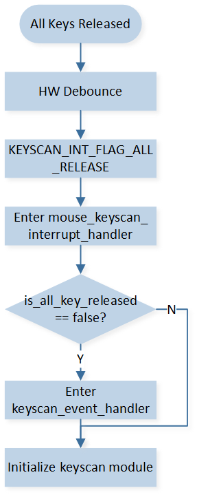
The Processing for All Release Interrupt
After being determined as a valid button press, it will be processed through the keyscan_event_handler(). The specific process is as follows:
Compare the received key value with the saved key value. If they are the same, no further processing is done, and it returns to avoid sending duplicate key values to the other end.
If the received key value is different from the saved key value, it will send the key value to the other end. At the same time, it will send a message to the app task to handle combination keys, function keys, and other actions.
Long Key Press Protection
The macro FEATURE_SUPPORT_KEY_LONG_PRESS_PROTECT is set to 1 by default in board.h to enable long key press protection. The detection time for the long key press is modified by the macro LONG_PRESS_KEY_DETECT_TIMEOUT, which defaults to 30 seconds.
#define FEATURE_SUPPORT_KEY_LONG_PRESS_PROTECT 1 /* set 1 to stop scan when press one key too long */
#if FEATURE_SUPPORT_KEY_LONG_PRESS_PROTECT
#define LONG_PRESS_KEY_DETECT_TIMEOUT 30000 /* 30 sec */
#endif
When long key press protection is enabled, the long_press_key_detect_timer will be reset every time a button is pressed. If one or more buttons are pressed and not released for a certain period of time, the long_press_key_detect_timer_cb will be triggered. In this callback function, the GPIO pins of the keyscan rows will be configured as GPIOs, and the interrupt mode will be set to high-level triggering. The GPIO pins corresponding to the pressed buttons will enable interrupts. At this point, the system can enter Deep Low Power Sleep (DLPS) mode.
static void long_press_key_detect_timer_cb(TimerHandle_t p_timer)
{
APP_PRINT_INFO0("[long_press_key_detect_timer_cb] detect key long pressed event");
keyscan_global_data.is_key_long_pressed = true;
KeyScan_Cmd(KEYSCAN, DISABLE);
/* reset row pins for gpio config */
Pinmux_Config(KEYSCAN_ROW_0, DWGPIO);
Pinmux_Config(KEYSCAN_ROW_1, DWGPIO);
Pinmux_Config(KEYSCAN_ROW_2, DWGPIO);
RCC_PeriphClockCmd(APBPeriph_GPIOA, APBPeriph_GPIOA_CLOCK, ENABLE);
RCC_PeriphClockCmd(APBPeriph_GPIOB, APBPeriph_GPIOB_CLOCK, ENABLE);
GPIO_InitTypeDef GPIO_Param = {0};
GPIO_StructInit(&GPIO_Param);
GPIO_Param.GPIO_ITCmd = ENABLE;
GPIO_Param.GPIO_ITTrigger = GPIO_INT_TRIGGER_LEVEL;
GPIO_Param.GPIO_ITPolarity = GPIO_INT_POLARITY_ACTIVE_HIGH;
NVIC_InitTypeDef NVIC_InitStruct = {0};
NVIC_InitStruct.NVIC_IRQChannelPriority = 3;
NVIC_InitStruct.NVIC_IRQChannelCmd = ENABLE;
APP_PRINT_INFO1("long pressed keys are 0x%2X",
app_global_data.mouse_current_data.button);
uint8_t row_button_mask[KEYSCAN_ROW_SIZE] = {0};
for (uint8_t i = 0; i < KEYSCAN_ROW_SIZE; i++)
{
for (uint8_t j = 0; j < KEYSCAN_COLUMN_SIZE; j++)
{
row_button_mask[i] |= KEY_MAPPING_TABLE[i][j];
}
}
if (app_global_data.mouse_current_data.button & row_button_mask[0])
{
/* row 0 gpio */
GPIO_Param.GPIO_Pin = GPIO_GetPin(KEYSCAN_ROW_0);
GPIO_Init(GPIO_GetPort(KEYSCAN_ROW_0), &GPIO_Param);
/* row 0 nvic */
NVIC_InitStruct.NVIC_IRQChannel = KEYSCAN_ROW_0_IRQ;
NVIC_Init(&NVIC_InitStruct);
/* enable row 0 interrupt */
GPIO_ClearINTPendingBit(GPIO_GetPort(KEYSCAN_ROW_0), GPIO_GetPin(KEYSCAN_ROW_0));
GPIO_MaskINTConfig(GPIO_GetPort(KEYSCAN_ROW_0), GPIO_GetPin(KEYSCAN_ROW_0), DISABLE);
GPIO_INTConfig(GPIO_GetPort(KEYSCAN_ROW_0), GPIO_GetPin(KEYSCAN_ROW_0), ENABLE);
is_row_0_long_pressed = true;
}
......
When the long pressed keys are all released, the GPIO interrupt will be triggered and the pins will be reconfigured to keyscan function.
void keyscan_row_0_int_handler(void)
{
GPIO_INTConfig(GPIO_GetPort(KEYSCAN_ROW_0), GPIO_GetPin(KEYSCAN_ROW_0), DISABLE);
GPIO_MaskINTConfig(GPIO_GetPort(KEYSCAN_ROW_0), GPIO_GetPin(KEYSCAN_ROW_0), ENABLE);
GPIO_ClearINTPendingBit(GPIO_GetPort(KEYSCAN_ROW_0), GPIO_GetPin(KEYSCAN_ROW_0));
APP_PRINT_INFO0("[keyscan_row_0_int_handler] long pressed row_0 keys release");
is_row_0_long_pressed = false;
if (is_row_1_long_pressed == false && is_row_2_long_pressed == false)
{
APP_PRINT_INFO0("[keyscan_row_0_int_handler] long pressed keys all release");
keyscan_global_data.is_key_long_pressed = false;
if (keyscan_global_data.is_all_key_released == false)
{
keyscan_global_data.is_all_key_released = true;
memset(&keyscan_global_data.cur_fifo_data, 0, sizeof(T_KEYSCAN_FIFO_DATA));
keyscan_event_handler(&keyscan_global_data.cur_fifo_data);
}
mouse_keyscan_init_data();
Pinmux_Config(KEYSCAN_ROW_0, KEY_ROW_0);
Pinmux_Config(KEYSCAN_ROW_1, KEY_ROW_1);
Pinmux_Config(KEYSCAN_ROW_2, KEY_ROW_2);
mouse_keyscan_module_init(KeyScan_Auto_Scan_Mode, ENABLE, KEYSCAN_DEBOUNCE, ENABLE,
KEYSCAN_INTERVAL);
}
}
Report Rate Combination Key
In BLE mode, the reporting rate is fixed at 125 Hz due to the BLE connection interval. In 2.4G and USB modes, cycle through different reporting rates by pressing the Middle + Forward + Backward combination keys for 3 seconds. Each time this combination is performed, it will switch to the next reporting rate level.
Report rate gears are as follows:
#define USB_REPORT_RATE_LEVEL_0 1000 #define USB_REPORT_RATE_LEVEL_1 4000 #define USB_REPORT_RATE_LEVEL_2 8000 #define USB_REPORT_RATE_LEVEL_NUM 3 #define PPT_REPORT_RATE_LEVEL_0 1000 #define PPT_REPORT_RATE_LEVEL_1 2000 #define PPT_REPORT_RATE_LEVEL_2 4000 #define PPT_REPORT_RATE_LEVEL_NUM 3 #define USB_REPORT_RATE_DEFAULT_INDEX 2 #define PPT_REPORT_RATE_DEFAULT_INDEX 2
Report rate key is handled in
mouse_report_rate_change_handle().
Wheel
Mouse wheel function is based on hardware AON qdecoder module (QDEC), which can normally work after IC enters DLPS.
QDEC Pin Configuration
The pins used in the qdecoder module are in board.h.
#define QDEC_X_PHA_PIN P9_1
#define QDEC_X_PHB_PIN P9_0
Note
Only few fixed pins can be pinmuxed to the qdecoder. Refer to the datasheet for details.
QDEC Initialization
PAD initialization:
void qdec_module_pad_config(void) { Pad_Config(QDEC_X_PHA_PIN, PAD_PINMUX_MODE, PAD_IS_PWRON, PAD_PULL_NONE, PAD_OUT_DISABLE, PAD_OUT_LOW); Pad_Config(QDEC_X_PHB_PIN, PAD_PINMUX_MODE, PAD_IS_PWRON, PAD_PULL_NONE, PAD_OUT_DISABLE, PAD_OUT_LOW); }
Pinmux initialization:
void qdec_module_pinmux_config(void) { Pinmux_AON_Config(QDPH0_IN_P9_0_P9_1); }
Qdecoder module initialization:
void qdec_cfg_init(uint32_t is_debounce, uint8_t phasea, uint8_t phaseb) { AON_QDEC_InitTypeDef qdecInitStruct = {0}; AON_QDEC_StructInit(&qdecInitStruct); qdecInitStruct.debounceTimeX = 20;/* uint 1/32 ms, recommended debounce time setting is between 600us and 1000us */ qdecInitStruct.axisConfigX = ENABLE; qdecInitStruct.debounceEnableX = is_debounce; qdecInitStruct.initPhaseX = (phasea << 1) | phaseb; qdecInitStruct.manualLoadInitPhase = ENABLE; qdecInitStruct.counterScaleX = CounterScale_2_Phase; AON_QDEC_Init(AON_QDEC, &qdecInitStruct); AON_QDEC_INTConfig(AON_QDEC, AON_QDEC_X_INT_NEW_DATA, ENABLE); AON_QDEC_INTConfig(AON_QDEC, AON_QDEC_X_INT_ILLEAGE, ENABLE); AON_QDEC_INTMask(AON_QDEC, AON_QDEC_X_INT_MASK, DISABLE); AON_QDEC_INTMask(AON_QDEC, AON_QDEC_X_CT_INT_MASK, DISABLE); AON_QDEC_INTMask(AON_QDEC, AON_QDEC_X_ILLEAGE_INT_MASK, DISABLE); AON_QDEC_Cmd(AON_QDEC, AON_QDEC_AXIS_X, ENABLE); GPIO_InitTypeDef GPIO_InitStruct = {0}; GPIO_StructInit(&GPIO_InitStruct); GPIO_InitStruct.GPIO_Pin = GPIO_GetPin(QDEC_X_PHA_PIN); GPIO_InitStruct.GPIO_Mode = GPIO_MODE_IN; GPIO_InitStruct.GPIO_ITCmd = DISABLE; GPIO_Init(GPIO_GetPort(QDEC_X_PHA_PIN), &GPIO_InitStruct); GPIO_InitStruct.GPIO_Pin = GPIO_GetPin(QDEC_X_PHB_PIN); GPIO_Init(GPIO_GetPort(QDEC_X_PHB_PIN), &GPIO_InitStruct); }
Important parameters are as follows:
AON_QDEC_InitTypeDef::axisConfigX: QDEC enable or disable.AON_QDEC_InitTypeDef::debounceEnableX: Debounce enable or disable.AON_QDEC_InitTypeDef::debounceTimeX: Debounce time (unit: 1/32ms).AON_QDEC_InitTypeDef::initPhaseX: Initial phase.AON_QDEC_InitTypeDef::manualLoadInitPhase: Auto-loading phase function, needs to be set to ENABLE. If enabling this function, after each interrupt is generated, the current phase will be automatically loaded after each QDEC interrupt.AON_QDEC_InitTypeDef::counterScaleX: Indicates how many phase changes will be counted and trigger interrupt. Needs to be set to CounterScale_2_Phase.
NVIC initialization:
void qdec_module_nvic_config(void) { NVIC_InitTypeDef nvic_init_struct = {0}; nvic_init_struct.NVIC_IRQChannel = AON_QDEC_IRQn; nvic_init_struct.NVIC_IRQChannelCmd = (FunctionalState)ENABLE; nvic_init_struct.NVIC_IRQChannelPriority = 3; NVIC_Init(&nvic_init_struct); }
Deinitialize QDEC:
void qdec_module_deinit(void) { QDEC_DBG_BUFFER(MODULE_APP, LEVEL_INFO, "qdec deinit", 0); AON_QDEC_Cmd(AON_QDEC, AON_QDEC_AXIS_X, DISABLE); }
Wheel Scroll Detection
The scroll wheel module is based on the hardware AON QDEC (Quadrature Decoder) module, which does not lose power in DLPS mode. It obtains the state of the scroll wheel by detecting phase changes (i.e., level changes) on two pins. Two interrupts are configured: AON_QDEC_FLAG_NEW_CT_STATUS_X and AON_QDEC_FLAG_ILLEGAL_STATUS_X. The former is triggered when the scroll wheel module detects a sequential phase change (e.g., transitioning from 00 to 01 or 10 to 11). The latter indicates that there is no sequential phase change but a sudden transition in phase (e.g., transitioning from 00 to 11).
In the interrupt handler of the QDEC module, the current level of the two pins is first obtained. Based on the levels of the two pins, the handler determines if the scroll wheel has moved one increment. Additionally, if the system is waking up from DLPS, the status of the wake-up pin is also considered to assist in determining the scroll wheel movement. Since the scroll wheel can move half an increment and return to its original position, resulting in a phase change from 00 to 01 or 10 to 00, it will also trigger the AON_QDEC_FLAG_NEW_CT_STATUS_X interrupt. Therefore, it is necessary to use the status of the scroll wheel pins to determine the actual scroll wheel movement. After determining the scroll wheel direction, the QDEC data is processed. If the system is currently in USB mode, connected via 2.4G, or connected via BLE, the interrupt handler directly sends the data to ensure real-time transmission. Otherwise, a message is sent to the app task for further handling, such as reconnecting or other operations.
{kind=link}
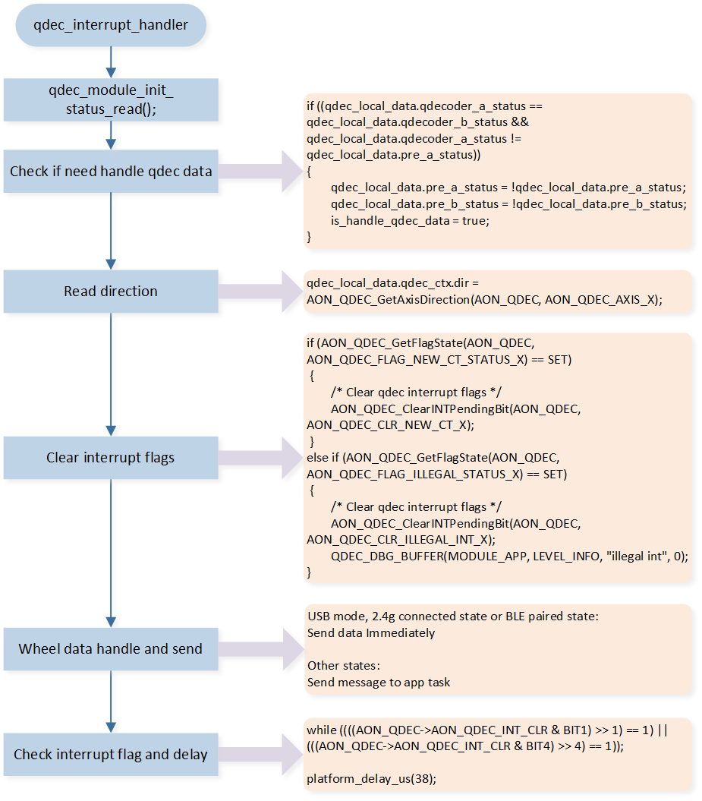
QDEC Interrupt Handler
Optical Sensor
Sensor PAW3395 is used in the demo code as a reference design. Developers can choose the appropriate sensor according to the product requirements.
Sensor Pin Configuration
The pins used in the PAW3395 module are in board.h, including SPI pins and motion pin.
#define SENSOR_SPI_CLK P4_0
#define SENSOR_SPI_MISO P4_1
#define SENSOR_SPI_MOSI P4_2
#define SENSOR_SPI_NCS P4_3
#define SENSOR_SPI_NRESET P0_5
#define SENSOR_SPI_MOTION P0_6
#define SENSOR_MOTION_IRQ GPIOA6_IRQn
#define mouse_motion_pin_handler GPIOA6_Handler
Sensor Initialization
The initialization of PAW3395 module includes PAD and Pinmux initialization, SPI initialization, PAW3395 initialization (DPI, and other registers), motion detection initialization, reporting rate, and sampling timer initialization.
PAD and Pinmux Initialization
PAD initialization:
void paw3395_module_pad_config(void)
{
Pad_Config(SENSOR_SPI_CLK, PAD_PINMUX_MODE, PAD_IS_PWRON, PAD_PULL_NONE, PAD_OUT_ENABLE,
PAD_OUT_HIGH);
Pad_Config(SENSOR_SPI_MISO, PAD_PINMUX_MODE, PAD_IS_PWRON, PAD_PULL_NONE, PAD_OUT_ENABLE,
PAD_OUT_HIGH);
Pad_Config(SENSOR_SPI_MOSI, PAD_PINMUX_MODE, PAD_IS_PWRON, PAD_PULL_NONE, PAD_OUT_ENABLE,
PAD_OUT_HIGH);
Pad_Config(SENSOR_SPI_NCS, PAD_PINMUX_MODE, PAD_IS_PWRON, PAD_PULL_NONE, PAD_OUT_ENABLE,
PAD_OUT_HIGH);
Pad_Config(SENSOR_SPI_MOTION, PAD_PINMUX_MODE, PAD_IS_PWRON, PAD_PULL_NONE, PAD_OUT_DISABLE,
PAD_OUT_HIGH);
Pad_Config(SENSOR_SPI_NRESET, PAD_SW_MODE, PAD_IS_PWRON, PAD_PULL_UP, PAD_OUT_ENABLE,
PAD_OUT_HIGH);
}
Pinmux initialization:
void paw3395_module_pinmux_config(void)
{
Pinmux_Deinit(SENSOR_SPI_CLK);
Pinmux_Deinit(SENSOR_SPI_MISO);
Pinmux_Deinit(SENSOR_SPI_MOSI);
Pinmux_Deinit(SENSOR_SPI_NCS);
Pinmux_Config(SENSOR_SPI_CLK, SPI0_CLK_MASTER);
Pinmux_Config(SENSOR_SPI_MISO, SPI0_MI_MASTER);
Pinmux_Config(SENSOR_SPI_MOSI, SPI0_MO_MASTER);
Pinmux_Config(SENSOR_SPI_NCS, DWGPIO);
Pinmux_Config(SENSOR_SPI_MOTION, DWGPIO);
}
SPI Initialization
SPI initialization is as follows: the SPI Clock is set to 10MHz.
void paw3395_module_master_spi_init(void)
{
RCC_PeriphClockCmd(APBPeriph_SPI0, APBPeriph_SPI0_CLOCK, ENABLE);
SPI_InitTypeDef SPI_InitStruct = {0};
SPI_StructInit(&SPI_InitStruct);
SPI_InitStruct.SPI_Direction = SPI_Direction_FullDuplex;
SPI_InitStruct.SPI_DataSize = SPI_DataSize_8b;
SPI_InitStruct.SPI_CPOL = SPI_CPOL_High;
SPI_InitStruct.SPI_CPHA = SPI_CPHA_2Edge;
SPI_InitStruct.SPI_BaudRatePrescaler = 4;
SPI_InitStruct.SPI_FrameFormat = SPI_Frame_Motorola;
SPI_Init(PAW3395_SPI, &SPI_InitStruct);
SPI_Cmd(PAW3395_SPI, ENABLE);
RCC_PeriphClockCmd(APBPeriph_GPIOA, APBPeriph_GPIOA_CLOCK, ENABLE);
RCC_PeriphClockCmd(APBPeriph_GPIOB, APBPeriph_GPIOB_CLOCK, ENABLE);
GPIO_InitTypeDef GPIO_InitStruct = {0};
GPIO_StructInit(&GPIO_InitStruct);
GPIO_InitStruct.GPIO_Pin = GPIO_GetPin(SENSOR_SPI_NCS);
GPIO_InitStruct.GPIO_Mode = GPIO_MODE_OUT;
GPIO_Init(GPIO_GetPort(SENSOR_SPI_NCS), &GPIO_InitStruct);
GPIO_SetBits(GPIO_GetPort(SENSOR_SPI_NCS), GPIO_GetPin(SENSOR_SPI_NCS));
}
PAW3395 Initialization
The initialization of the PAW3395 mainly includes DPI initialization, XY-axis direction initialization, and working mode initialization.
DPI initialization involves retrieving the saved index value from the FTL (Flash Translation Layer) region of the flash memory. If no index value is saved, it is set to the default DPI index and stored in the FTL region. Refer to Memory for detailed information about the FTL region.
DPI initialization is as follows:
void paw3395_dpi_init(void)
{
uint16_t x_axis_dpi = 0;
if (0 != ftl_load_from_module("app", &paw3395_global_data.dpi_level, FTL_DPI_OFFSET, FTL_DPI_LEN))
{
paw3395_global_data.dpi_level = DEFAULT_DPI_INDEX;
ftl_save_to_module("app", &paw3395_global_data.dpi_level, FTL_DPI_OFFSET, FTL_DPI_LEN);
}
else
{
if (paw3395_global_data.dpi_level < DPI_INDEX_MIN ||
paw3395_global_data.dpi_level > DPI_INDEX_MAX)
{
paw3395_global_data.dpi_level = DEFAULT_DPI_INDEX;
ftl_save_to_module("app", &paw3395_global_data.dpi_level, FTL_DPI_OFFSET, FTL_DPI_LEN);
}
}
x_axis_dpi = paw3395_get_dpi_value_by_index(paw3395_global_data.dpi_level - 1);
paw3395_module_dpi_config(x_axis_dpi, x_axis_dpi);
}
XY axis direction initialization is as follows, according to the actual physical placement of the sensor.
/* set sensor axis control */
paw3395_write_reg(REG_AXIS_CONTROL, 0x40);
PAW3395 has several operating modes, which need to be selected according to the transmission mode and the reporting rate.
Motion Detection Initialization
When PAW3395 has sampled data generated, the motion pin will be pulled down by PAW3395. Detect whether the mouse has moved, by the GPIO interrupt of the motion pin with level trigger.
void paw3395_module_motion_gpio_init(void)
{
RCC_PeriphClockCmd(APBPeriph_GPIOA, APBPeriph_GPIOA_CLOCK, ENABLE);
RCC_PeriphClockCmd(APBPeriph_GPIOB, APBPeriph_GPIOB_CLOCK, ENABLE);
GPIO_InitTypeDef GPIO_InitStruct = {0};
GPIO_StructInit(&GPIO_InitStruct);
GPIO_InitStruct.GPIO_Pin = GPIO_GetPin(SENSOR_SPI_MOTION);
GPIO_InitStruct.GPIO_ITCmd = ENABLE;
GPIO_InitStruct.GPIO_ITTrigger = GPIO_INT_TRIGGER_LEVEL;
GPIO_InitStruct.GPIO_ITPolarity = GPIO_INT_POLARITY_ACTIVE_LOW;
GPIO_Init(GPIO_GetPort(SENSOR_SPI_MOTION), &GPIO_InitStruct);
}
Reporting Rate and Sampling Timer Initialization
In the mouse BLE mode, the report rate is fixed at 125Hz. However, for the 2.4G and USB modes, the report rate initialization involves retrieving the saved Report rate index value from the FTL region of the flash memory. If no index value is saved, the default value is used and stored in the FTL region. The report rate is limited based on the USB communication speed. For example, if the USB mode is set to Full Speed, the report rate cannot exceed 1KHz to prevent packet loss due to a sampling frequency higher than the transmission rate. The initialization related to the report rate can be found in app_init_global_data().
void app_init_global_data(void)
{
memset(&app_global_data, 0, sizeof(app_global_data));
app_global_data.mtu_size = 23;
app_global_data.max_report_rate_level = REPORT_RATE_LEVEL_8000_HZ;
if (0 != ftl_load_from_module("app", &app_global_data.usb_report_rate_index,
FTL_USB_REPORT_RATE_INDEX_OFFSET,
FTL_USB_REPORT_RATE_INDEX_LEN))
{
app_global_data.usb_report_rate_index = USB_REPORT_RATE_DEFAULT_INDEX;
ftl_save_to_module("app", &app_global_data.usb_report_rate_index, FTL_USB_REPORT_RATE_INDEX_OFFSET,
FTL_USB_REPORT_RATE_INDEX_LEN);
}
if (0 != ftl_load_from_module("app", &app_global_data.ppt_report_rate_index,
FTL_PPT_REPORT_RATE_INDEX_OFFSET,
FTL_PPT_REPORT_RATE_INDEX_LEN))
{
app_global_data.ppt_report_rate_index = PPT_REPORT_RATE_DEFAULT_INDEX;
ftl_save_to_module("app", &app_global_data.ppt_report_rate_index, FTL_PPT_REPORT_RATE_INDEX_OFFSET,
FTL_PPT_REPORT_RATE_INDEX_LEN);
}
}
The sampling timer initialization parameters are based on the reporting rate.
if (app_global_data.mode_type == BLE_MODE)
{
paw3395_module_sample_timer_init(BLE_SAMPLE_PERIOD);
}
else if (app_global_data.mode_type == PPT_2_4G)
{
paw3395_global_data.sample_period = (SAMPLE_CLOCK_SOURCE / get_report_rate_level_by_index(PPT_2_4G,
app_global_data.ppt_report_rate_index, app_global_data.max_report_rate_level)) - 1;
paw3395_module_sample_timer_init(paw3395_global_data.sample_period);
}
else if (app_global_data.mode_type == USB_MODE)
{
paw3395_global_data.sample_period = (SAMPLE_CLOCK_SOURCE / get_report_rate_level_by_index(USB_MODE,
app_global_data.usb_report_rate_index, app_global_data.max_report_rate_level)) - 1;
paw3395_module_sample_timer_init(paw3395_global_data.sample_period);
}
Movement Trigger and Timing Sampling
After the initialization of the mouse system is completed, the Motion Pin GPIO interrupt is enabled. When the mouse moves, the Motion interrupt is triggered. In the interrupt handler function mouse_motion_pin_handler(), the Motion interrupt is disabled and the Sensor sampling timer is started based on the initialized settings. The timer is set to trigger the timer interrupt based on the specified time intervals. In the timer interrupt handler function mouse_sample_hw_timer_handler(), the relevant registers of the PAW3395 (such as X and Y values) are obtained. If there is XY data to be sent and the mouse is in USB mode, connected in 2.4G mode, or in BLE pairing state, the data is directly sent in the interrupt handler function to ensure real-time processing. Otherwise, a message is sent to the app_task for further processing. To avoid frequent triggering of the Motion interrupt and ensure timely data sampling, if there is no XY data to be sent, the sampling timer is not immediately stopped. It is only stopped after a short period of time without data. Then, the Motion Pin GPIO interrupt is re-enabled.
Power Detection and Charging
USB Plug Detection
By default, the USB_MODE_MONITOR pin is in a low state. When a USB is inserted, the USB_MODE_MONITOR pin is pulled high. The level of the USB_MODE_MONITOR pin is detected to determine whether the USB is currently inserted or removed. The USB_MODE_MONITOR pin is configured as a GPIO and the GPIO interrupt is enabled. When the GPIO interrupt of the USB_MODE_MONITOR pin is triggered, a software timer is started to repeatedly check the pin level for a certain number of times. This is done to debounce the signal and prevent any false detection of the USB insertion or removal status. For specific handling, refer to usb_mode_monitor_debounce_timeout_cb.
The GPIO interrupt handler of the USB_MODE_MONITOR pin is as follows.
void usb_mode_monitor_int_handler(void)
{
APP_PRINT_INFO0("usb_mode_monitor_int_handler");
/* Mask GPIO interrupt */
GPIO_INTConfig(GPIO_GetPort(USB_MODE_MONITOR), GPIO_GetPin(USB_MODE_MONITOR), DISABLE);
GPIO_MaskINTConfig(GPIO_GetPort(USB_MODE_MONITOR), GPIO_GetPin(USB_MODE_MONITOR), ENABLE);
GPIO_ClearINTPendingBit(GPIO_GetPort(USB_MODE_MONITOR), GPIO_GetPin(USB_MODE_MONITOR));
if (os_timer_start(&usb_mode_monitor_debounce_timer) == false)
{
GPIO_ClearINTPendingBit(GPIO_GetPort(USB_MODE_MONITOR), GPIO_GetPin(USB_MODE_MONITOR));
GPIO_MaskINTConfig(GPIO_GetPort(USB_MODE_MONITOR), GPIO_GetPin(USB_MODE_MONITOR), DISABLE);
GPIO_INTConfig(GPIO_GetPort(USB_MODE_MONITOR), GPIO_GetPin(USB_MODE_MONITOR), ENABLE);
}
else if (usb_mode_monitor_trigger_level == GPIO_PIN_LEVEL_HIGH)
{
is_usb_in_debonce_check = true;
usb_in_debonce_timer_num = 0;
}
else
{
is_usb_out_debonce_check = true;
usb_out_debonce_timer_num = 0;
}
}
Battery Level
The battery voltage will be divided to below 0.9 V using an external circuit, and then sampled using an ADC. After sampling the voltage value, it will be converted to battery voltage and battery percentage.

Battery Voltage Divider and ADC Sampling Circuit
ADC Pin Configuration
The pins used for ADC sampling are defined in board.h. ADC pins can only be assigned from P2_0 to P2_7, corresponding to ADC0 to ADC7.
#define BAT_ADC_PIN ADC_5
#define ADC_SAMPLE_CHANNEL 5
ADC Initialization
The ADC is configured to bypass mode, using one-shot sampling.
void bat_init_adc(void)
{
/* adc init */
Pad_Config(BAT_ADC_PIN, PAD_PINMUX_MODE, PAD_IS_PWRON, PAD_PULL_NONE, PAD_OUT_DISABLE,
PAD_OUT_LOW);
Pinmux_Config(BAT_ADC_PIN, IDLE_MODE);
ADC_DeInit(ADC);
RCC_PeriphClockCmd(APBPeriph_ADC, APBPeriph_ADC_CLOCK, ENABLE);
ADC_InitTypeDef adcInitStruct = {0};
ADC_StructInit(&adcInitStruct);
for (uint8_t index = 0; index < BAT_ADC_SAMPLE_CNT; index++)
{
adcInitStruct.ADC_SchIndex[index] = EXT_SINGLE_ENDED(ADC_SAMPLE_CHANNEL);
}
adcInitStruct.ADC_Bitmap = (1 << BAT_ADC_SAMPLE_CNT) - 1;
adcInitStruct.ADC_SampleTime = 14; /* sample time 1.5us */
ADC_Init(ADC, &adcInitStruct);
ADC_BypassCmd(ADC_SAMPLE_CHANNEL, ENABLE);
ADC_INTConfig(ADC, ADC_INT_ONE_SHOT_DONE, ENABLE);
}
Battery Level Detection
When the macro definition SUPPORT_BAT_PERIODIC_DETECT_FEATURE is set to 1, the software timer bat_detect_timer will be activated. This timer triggers periodic ADC sampling and conversion to obtain the battery voltage. Refer to bat_detect_battery_mv() for more details.
After obtaining the battery voltage, the mouse can get the battery level according to two tables bat_vol_discharge_level_table[] and bat_vol_charge_level_table[]. Refer to bat_calculate_bat_level() for more details.
Battery Power Mode
All battery power modes are as follows.
typedef enum
{
BAT_MODE_DEFAULT = 0, /* battery default mode */
BAT_MODE_NORMAL = 1, /* battery normal mode */
BAT_MODE_POWER_INDICATION = 2, /* battery power indication mode */
BAT_MODE_LOW_POWER = 3, /* battery low power mode */
BAT_MODE_FULL = 4, /* battery full */
} T_BAT_MODE;
Here is an explanation of the battery modes:
BAT_MODE_DEFAULT: This is the default mode when the device is powered on. No ADC sampling has been performed yet. After sampling, it transitions to another mode.
BAT_MODE_POWER_INDICATION: If the battery voltage is below the threshold defined as BAT_ENTER_POWER_INDICATION_THRESHOLD, LED will start flashing as an indication. It will exit this mode once the battery voltage exceeds the threshold defined for this mode.
BAT_MODE_LOW_POWER: If the battery voltage is below the BAT_ENTER_LOW_POWER_THRESHOLD, the device enters low power mode. In this mode, all functions such as buttons, scroll wheel, movement, and lighting effects are disabled until the battery voltage exceeds the threshold or the device is plugged in for charging.
BAT_MODE_FULL: This mode indicates that the battery is fully charged.
BAT_MODE_NORMAL: This mode represents any other state that is not covered by the above modes.
Light Effect
When the macro definition SUPPORT_LED_INDICATION_FEATURE is set to 1, the LED functionality is enabled. There are two ways to control the LEDs:
The maximum number of LEDs is defined with the macro LED_NUM_MAX.
PAD Output
The macro LED_GPIO_CTL_NUM defines the number of LEDs controlled by PAD. The pins of RGB LEDs controlled by PAD are defined as follows.
#define LED1_R_PIN P3_2
#define LED1_G_PIN XO32K
#define LED1_B_PIN XI32K
static T_LED_PIN led_pin[LED_GPIO_CTL_NUM] =
{
{
.rgb_led_pin[0] = LED1_R_PIN,
.rgb_led_pin[1] = LED1_G_PIN,
.rgb_led_pin[2] = LED1_B_PIN
},
};
The principle of controlling LEDs using GPIO pins is as follows:
Each LED blink event is recorded using the structure T_LED_EVENT_STG, which includes the priority, number of loops, color, and number of blink events for each LED. The led_blink_start() interface is used to enable a specific LED blink event, and the blink duration is passed as a parameter. The led_blink_exit() interface is used to stop a specific LED blink event. The led_gpio_ctrl_timer is a software timer that periodically checks the highest priority LED blink event and determines the current level of the LED pin. The software timer has a timeout value of LED_PERIOD, which is set to 50ms by default. This means that the LED pin status is checked and updated every 50ms. The correct level for the LED pin is set using the PAD SW mode to control the output voltage level of the GPIO pin, thus controlling the LED. By using these mechanisms, the software can control the LED blink events and update the LED pin state accordingly.
The struct T_LED_EVENT_STG is as follows.
typedef struct
{
uint8_t led_type_index;
uint8_t led_loop_cnt;
uint8_t led_color_mask_bit[3];
uint32_t led_bit_map;
} T_LED_EVENT_STG;
led_type_index: This variable represents the LED blink event number, which also indicates its priority. The event with the value 0 has the highest priority, and higher values indicate lower priority.
led_loop_cnt: This variable represents the number of loops within an LED blink event. The duration of one blink event is calculated as the product of the software timer
led_gpio_ctrl_timertimeout period (LED_PERIOD) and led_loop_cnt. The default value for LED_PERIOD is 50ms, and led_loop_cnt is set to 20 by default, making the duration of one blink event equal to 1 second.led_color_mask_bit[3]: This array represents the LED color options. Each element can be configured as red, green, blue individually, or in combinations of any two colors or all three colors.
led_bit_map: This variable represents the blink pattern of the LED. Within one blink event, each bit in led_bit_map represents the on or off state of the LED at a specific callback function call
led_gpio_ctrl_timer_cb. For example, if bit(n) is set to 1, it means that during the nth+1 call ofled_gpio_ctrl_timer_cbwithin the blink event, the LED should be on. On the other hand, if bit(n) is set to 0, the LED should be off during that specific callback function call. Sinceled_gpio_ctrl_timer_cbis called led_loop_cnt times within one blink event, only the values of bit 0 to bit(led_loop_cnt-1) are valid and considered for determining the LED state.
The default LED events and struct parameters are configured in the array led_event_arr[].
LED event can be started by calling led_blink_start().
T_LED_RET_CAUSE led_blink_start(uint16_t led_index, LED_TYPE type, uint8_t cnt);
#define LED_BLINK(led_index, type, n) led_blink_start(led_index, type, n)
Here is the explanation of the parameters:
led_index: This parameter represents the LED index and should not exceed LED_GPIO_CTL_NUM. The program typically has only one LED, LED_1, which has a value of 0.
type: This parameter specifies the LED blink event type.
n: This parameter represents the number of times the LED blink event will be executed. If the value is set to 0, it indicates an infinite number of executions.
For example, considering LED_BLINK(LED_1, LED_TYPE_BLINK_RESET, 2), it means that LED_1 will execute the blink event LED_TYPE_BLINK_RESET twice. The duration of one blink event is LED_PERIOD multiplied by the corresponding led_loop_cnt, which is 1 second in this case. The blink pattern for this event is to keep the LED constantly on, resulting in a constant illumination effect of LED_1 for 2 seconds.
PWM Output
PWM output is implemented using hardware timers. Each PWM output requires a dedicated hardware timer, which can be either a regular HW Timer or an Enhanced Timer. Therefore, for an RGB LED, three hardware timers are needed. The current usage of hardware timers by the program can be found in Hardware Timer, where it is stated that only 7 hardware timers are available for the LED module. To ensure precise control of lighting effects, an additional hardware timer is required to periodically check if changes to lighting effects and PWM outputs are necessary. This leaves only 7 hardware timers available to drive 2 RGB LEDs. If the LED brightness allows, it is possible to achieve multiplexing by allocating one hardware timer to control two pin outputs using PWM. The program does not provide an example of multiplexing, so it would need to be implemented separately.
The number of LEDs controlled by the PWM is defined by the macro LED_HW_TIM_PWM_CTL_NUM. The starting index of the LED controlled by the PWM is defined by the macro LED_HW_TIM_PWM_CTL_INDEX . The pins of the LED and the hardware timers used are configured as follows.
#define LED1_R_PIN P3_2 #define LED1_G_PIN XO32K #define LED1_B_PIN XI32K typedef struct { uint8_t pin_num; uint8_t pin_func; TIM_TypeDef *timer_type; ENHTIM_TypeDef *entimer_type; } T_LED_PWM_PARAM_DEF; static const T_LED_PWM_PARAM_DEF led_pwm_list[3 * LED_HW_TIM_PWM_CTL_NUM] = { {LED2_R_PIN, TIMER_PWM2, TIM2, NULL }, {LED2_G_PIN, ENPWM2_P, NULL, ENH_TIM2}, {LED2_B_PIN, ENPWM3_P, NULL, ENH_TIM3}, };
The principle of PWM output controlling LED is as follows: Each LED's blinking events, including priority, loop count, and blinking pattern, are recorded using the T_PWM_LED_EVENT_STG structure. The led_hw_tim_pwm_blink_start() interface is used to enable a specific LED's blinking event by providing the blink count. The led_hw_tim_pwm_blink_exit() interface is used to stop a specific LED's blinking event. The LED_CNT_TIM (default TIM6) hardware timer is used to periodically check and output the current highest priority LED's blinking event: the PWM waveform required for the LED pins at the current moment. The timeout period of the LED_CNT_TIM hardware timer is set to LED_CNT_TIME_MS, defaulting to 2ms. This means that the LED pin's PWM waveform is checked and updated every 2ms.
The struct T_PWM_LED_EVENT_STG is as follows.
typedef struct { uint8_t led_type_index; uint32_t led_loop_num; LED_EVENT_HANDLE_FUNC led_event_handle_func; } T_PWM_LED_EVENT_STG;
led_type_index: LED blinking event index, which also represents the event priority. 0 is the highest priority, and the higher the numerical value, the lower the priority.
led_loop_num: Number of loops within an LED blinking event. The duration of one blink event is equal to the timeout period of the hardware timer LED_CNT_TIM multiplied by led_loop_num. In the program, LED_CNT_TIME_MS is set to the default value of 2 ms, and led_loop_num is set to 500 by default, which means the duration of one blink event is 1 second.
led_event_handle_func: A callback function that defines the blinking pattern. It returns the RGB color brightness parameters of the LED at the current moment. After each timeout of the hardware timer LED_CNT_TIM, this callback function is called to fetch the current LED event color brightness parameters.
The default LED events and the associated struct parameters are configured in the array pwm_led_event_arr[].
static T_PWM_LED_EVENT_STG pwm_led_event_arr[PWM_LED_TYPE_MAX] = { {PWM_LED_TYPE_IDLE, PWM_LED_LOOP_NUM_IDLE, NULL}, {PWM_LED_TYPE_BLINK_RESET, PWM_LED_LOOP_NUM_500_TIMES, led_reset_event_handler}, {PWM_LED_TYPE_BLINK_TEST, PWM_LED_LOOP_NUM_500_TIMES, led_test_event_handler}, {PWM_LED_TYPE_ON, PWM_LED_LOOP_NUM_500_TIMES, NULL}, };
LED event can be started by calling led_hw_tim_pwm_blink_start().
void led_hw_tim_pwm_blink_start(uint16_t led_index, PWM_LED_TYPE type, uint32_t cnt); #define PWM_LED_BLINK(led_index, type, cnt) led_hw_tim_pwm_blink_start(led_index, type, cnt)
led_index: LED Index, cannot exceed LED_HW_TIM_PWM_CTL_INDEX + LED_HW_TIM_PWM_CTL_NUM.
type: LED blinking event.
n: the times of LED blinking event. 0 means infinite.
Watchdog
In the RTL87x2G platform, there are two types of watchdog timers that can operate in both CPU active and DLPS states. By setting WATCH_DOG_ENABLE to 1 in board.h, both watchdog timers can be enabled. The watchdog timeout time can be modified using the macro WATCH_DOG_TIMEOUT_MS, which is set to 5 seconds by default. The watchdog will be fed within (WATCH_DOG_TIMEOUT_MS - 1) seconds and the system will automatically restart if timeout. After enabling the watchdog timers, a software timer will be started to periodically feed the watchdog (within a time interval that is shorter than the timeout period).
The app_system_reset() interface can be called to trigger a watchdog reset manually. Different reset modes can be configured, including RESET_ALL and RESET_ALL_EXCEPT_AON. The reason for the reset can be recorded, and the reset reason can be retrieved after the IC is powered up. Users can add new reset reasons to the T_SW_RESET_REASON structure.
DFU
DFU (Device Firmware Upgrade) upgrade is implemented based on USB. To enable this feature, the macro definition FEATURE_SUPPORT_USB_DFU in board.h needs to be set to 1. The process is as follows:
Use the MPPackTool to package the desired image for upgrade.
Use the CFUDownloadTool to transfer the packaged image contents via USB to the mouse.
The mouse stores the image to be upgraded in the IC's OTA Temp area.
When the data transfer is completed and verified, the system automatically restarts and moves all images in the OTA Temp area to the running area of Flash to perform firmware upgrade.
DFU supports packing and upgrading one or more of the following five images: boot patch, system patch, host image, stack patch, app image. However, the total size of the images packed in one session (excluding boot patch) cannot exceed the OTA Temp area. For example, in the default flash map, the app image cannot be combined with the host image for packing.
After the DFU data transfer is completed, it is necessary to move the upgraded image from the OTA Temp area to the Flash running area. If the process is interrupted due to power failure and restart, the system will resume the transfer and the IC will not be bricked.
DFU upgrade uses a separate USB interface and implements data interaction during the upgrade process based on HID set/get report. For detailed implementation, refer to usb_hid_interface_dfu.c/.h.
Tri-Mode Mouse application follows the CFU V1 Update Protocol. For specific implementation, refer to usb_dfu.c/.h.
To upgrade the RTL87x2G mouse via DFU, refer to MPPack Tool for how to use the packaging tool. For the upgrade, connect the device to the computer via USB and refer to CFUDownloadTool for tool usage.
Low Power
DLPS
DLPS (Deep Low Power State) is a power-saving feature that shuts down power to relevant modules when the CPU and peripherals are not required to work. To enable DLPS, the macro definition DLPS_EN in board.h needs to be set to 1.
The macro definitions USE_USER_DEFINE_DLPS_EXIT_CB and USE_USER_DEFINE_DLPS_ENTER_CB should be set to 1. This allows the use of callbacks to configure the necessary settings when exiting and entering DLPS.
With the relevant macro definitions enabled, when entering DLPS, the corresponding module's registers will be automatically saved, and when exiting DLPS, the register configurations will be restored. Taking GPIO as an example, when USE_GPIOA_DLPS and USE_GPIOB_DLPS are set to 1, the GPIO-related register configurations will be automatically saved and restored when entering and exiting DLPS. This eliminates the need to reinitialize GPIO when exiting DLPS.
For a more detailed description of DLPS, refer to DLPS Mode Overview.
Configuration before Entering DLPS
When entering DLPS, most peripherals will be powered off, and some peripherals may have external circuits connected to their pins that require configuring the corresponding pin levels to prevent leakage current. When the macro definition USE_USER_DEFINE_DLPS_ENTER_CB is set to 1, the app callback function app_enter_dlps() is registered to be called before entering DLPS. In this function, the PAD configurations for each module's pins are set to PAD_SW_MODE, with the desired input/output mode and level. For some functionalities, their pins are required to be able to wake up the system from DLPS, such as the buttons. Enable the PAD wake-up function for the corresponding pins in the app callback function by calling System_WakeUpPinEnable() before entering DLPS. Configure the wake-up level polarity and debounce time. The debounce time for DLPS PAD wake-up is shared among all pins. Therefore, the PAD debounce is not enabled in the program. Instead, each pin that wakes up the system uses the corresponding module's own debounce or SW timer debounce.
Application callback to be called before entering DLPS is as follows.
static void app_enter_dlps(void)
{
Pad_ClearAllWakeupINT();
System_WakeupDebounceStatus(0);
#if MOUSE_GPIO_BUTTON_EN
mouse_gpio_button_module_enter_dlps_config();
#elif MOUSE_KEYSCAN_EN
mouse_keyscan_module_enter_dlps_config();
#endif
#if AON_QDEC_EN
qdec_module_enter_dlps_config();
#endif
#if GPIO_QDEC_EN
gpio_qdec_module_enter_dlps_config();
#endif
#if PAW3395_SENSOR_EN
paw3395_module_enter_dlps_config();
#endif
#if MODE_MONITOR_EN
mode_monitor_module_enter_dlps_config();
#endif
#if SUPPORT_BAT_DETECT_FEATURE
bat_enter_dlps_config();
#endif
#if (WATCH_DOG_ENABLE == 1)
if (app_global_data.is_aon_wdg_enable == true)
{
AON_WDT_Start(AON_WDT, WATCH_DOG_TIMEOUT_MS, RESET_ALL_EXCEPT_AON);
}
#endif
}
Configuration after Exiting DLPS
After exiting DLPS, the pins configured before entering DLPS need to be reinitialized. The macro USE_USER_DEFINE_DLPS_EXIT_CB is default set to 1, and the callback function app_exit_dlps is called after exiting DLPS. In the function app_exit_dlps(), the pins are set to pinmux mode and the corresponding peripheral modules.
Application callback to be called after exiting DLPS is as follows.
static void app_exit_dlps(void)
{
#if MOUSE_GPIO_BUTTON_EN
mouse_gpio_button_module_exit_dlps_config();
#elif MOUSE_KEYSCAN_EN
mouse_keyscan_module_exit_dlps_config();
#endif
#if PAW3395_SENSOR_EN
paw3395_module_exit_dlps_config();
#endif
#if MODE_MONITOR_EN
mode_monitor_module_exit_dlps_config();
#endif
#if SUPPORT_BAT_DETECT_FEATURE
bat_exit_dlps_config();
#endif
#if GPIO_QDEC_EN
gpio_qdec_module_exit_dlps_config();
#endif
#if (WATCH_DOG_ENABLE == 1)
if (app_global_data.is_aon_wdg_enable == true)
{
AON_WDT_Disable(AON_WDT);
}
#endif
}
CPU WFI
When a peripheral, such as a mouse, is constantly active, it cannot enter DLPS. However, in situations where the CPU may not need to be active, it can enter the WFI (Wait For Interrupt) state to save power. Normally, entering WFI requires some time for checking, which consumes power. To reduce power consumption, the interface pm_no_check_status_before_enter_wfi can be called in scenarios where DLPS cannot be entered, allowing the CPU to enter WFI more quickly. However, once this interface is called, DLPS cannot be entered anymore.
When there is a need to enter DLPS, the interface pm_check_status_before_enter_wfi_or_dlps should be called to perform the necessary checks before entering DLPS or CPU WFI.
The program by default calls the pm_no_check_status_before_enter_wfi interface in the following situations:
When the mouse is moving during optical sensor sampling.
When the mouse is in USB mode and USB is not in suspend state.
The program by default calls the pm_check_status_before_enter_wfi_or_dlps interface in the following situations:
When the mouse stops moving or optical sensor sampling is stopped.
When the mouse is in USB mode and USB enters suspend state.
When the mouse's power mode is BAT_MODE_LOW_POWER.
No-Operation Disconnection and Sleep
When the macro definition FEATURE_SUPPORT_NO_ACTION_DISCONN is set to 1 (default), the no-action disconnection feature is enabled. In BLE or 2.4G mode, if there is no activity for a certain period of time, the mouse will disconnect to save power. However, the mouse can be reconnected and used again by pressing a button, using the scroll wheel, or moving the mouse. The duration of no-action disconnection can be modified by the macro definition NO_ACTION_DISCON_TIMEOUT, which is set to 1 minute by default.
When both the macro definitions FEATURE_SUPPORT_NO_ACTION_DISCONN and FEATURE_SUPPORT_NO_ACTION_SENSOR_SLEEP are set to 1 (default), the no-action disconnection feature is enabled along with the no-action sensor sleep feature. In BLE or 2.4G mode, if the mouse is in a disconnected state and there is no activity for a certain period of time, some power-consuming modules will be turned off to save further power. In this state, the optical sensor is disabled, and the mouse can only be reactivated and used again through limited means, such as pressing a button or using the scroll wheel. The duration of no-action sensor sleep can be modified by the macro definition NO_ACTION_SENSOR_SLEEP_TIMEOUT, which is set to 1 minute by default.
FTL
FTL (Flash Translation Layer) is an abstraction layer provided for the BT stack and APP to read and write data on flash memory. The FTL interface allows for direct reading and writing of data on the flash memory using logical addresses, making the operation more convenient. For mouse applications, it is recommended to store small data or frequently modified data in the FTL, which facilitates operations. Furthermore, FTL operations do not involve flash erasure, which can block all interrupts. There are two versions of FTL: v1 and v2. The mouse application currently uses the v2 version. For more details, refer to Memory.
FTL Initialization
In FTL v2, the app needs to initialize the FTL by dividing it into modules. In the SDK, the app only uses one module, which is initialized in the main function. The minimum unit is set to 4 bytes, and a total of 1016 bytes are allocated using the following function: ftl_init_module().
The size of logical addresses that FTL initialization can allocate depends on the size of the FTL physical address area in the flash map. The corresponding relationship, adjustment basis, and methods can be found in Memory.
Space Planning and Adjustment
In board.h, the FTL space currently used by the app is planned. The first 16 bytes are reserved for saving pairing information for 2.4G, and the addresses available for the app to use are in the range of [16, 1016]. In the SDK, DPI, report rate, Bluetooth pairing information backups, and Bluetooth random addresses are stored in the FTL area. Users can adjust the addresses of existing data or plan to add new data to ensure that the stored data does not overlap.
Garbage Collection
When the FTL physical space is about to be filled, automatic garbage collection is performed to release physical space. During the garbage collection process, there will be erase flash actions that can block all interrupts. To minimize the impact of garbage collection on normal program behavior, set the macro FEATURE_SUPPORT_APP_ACTIVE_FTL_GC to 1. This allows the app to proactively perform garbage collection when the mouse is not in use, making the triggering of garbage collection controllable.
The scenarios for actively triggering garbage collection include:
Disconnection in BLE mode.
Disconnection in 2.4G mode and unable to reconnect for a period of time.
Proactively disconnecting after a period of inactivity.
Production Testing
Ways to Enter and Exit Production Test Mode
Entering via GPIO Trigger
When the macro THE_WAY_TO_ENTER_MP_TEST_MODE in board.h is configured as ENTER_MP_TEST_MODE_BY_GPIO_TRIGGER, it means that the MP_TEST_PIN_1 and MP_TEST_PIN_2 pins are checked for their logic levels during power-on. If the logic levels meet the specified conditions, the device enters the production test mode. The function mp_test_mode_check_and_enter() in board.h is responsible for adjusting the logic level states that trigger entering the production test mode. You can modify the code in this function to customize the conditions for entering the production test mode based on your requirements.
Entering and Exiting via USB Commands
When the macro THE_WAY_TO_ENTER_MP_TEST_MODE in board.h is configured as ENTER_MP_TEST_MODE_BY_USB_CMD, it means that the device can enter and exit the production test mode through USB commands. The default implemented functionalities are as follows.
Set report related commands are implemented in mp_test_set_report_handle(), with implementation methods divided into the GAP layer and the HCI layer:
The following production test commands are consistent when implemented via the GAP layer or the HCI layer:
Enter production test mode: 14(report ID) 56 43 54 65 73 74.
Temporary frequency offset adjustment (not saved, restored after reboot): 14(report ID) 56 43 58 74 61 6C 00 xtal_value.
Write the frequency offset value to the config file: 14(report ID) 56 43 58 74 61 6C 01 xtal_value.
Reboot to normal mode: 14(report ID) 56 43 52 65 73 65 74.
The following production test commands are only valid when implemented via the GAP layer:
Enter/exit single tone test mode: 14(report ID) 56 43 01 78 fc 04 on_off_state channel tx_power.
on_off_state: 1 - enter single tone test mode, 0 - exit single tone test mode.
channel: actual frequency is 2402 + channel (MHz). For example, the value should be 0x28 if the frequency is 2442Hz.
tx_power: 8: 4dbm, 0: 0dbm, -8(0xF8): -4dbm, -14(0xF2): -7dbm, -46(0xD2): -23dbm.
The following production test commands are only valid when implemented via the HCI layer:
Enter/exit single tone test mode: 14(report ID) 56 43 01 eb fc 06 05 07 on_off_state channel.
The setting methods for on_off_state, channel are the same as the single tone command implemented via the GAP layer.
LE Transmitter Test: 14(report ID) 56 43 01 34 20 04 channel test_data_len pkt_payload_type PHY.
channel = (freq-2402)/2. For example, the value should be 0x14 if the frequency is 2442Hz.
test_data_len: The range of values is 0x0 to 0xFF.
pkt_payload_type: 0x0 (PRBS9), 0x01 (11110000), 0x02 (10101010), 0x03 (PRBS15), 0x04 (All 1), 0x05 (All 0), 0x06 (00001111), 0x07 (01010101).
PHY: 0x01 (LE 1M PHY), 0x02 (LE 2M PHY), 0x03 (LE Coded PHY with S=8), 0x04 (LE Coded PHY with S=2).
After APP sends the command, the HCI layer will send a response. If the last byte of the response is 0x0, it indicates that the command status is successful; if it is any other value, it indicates that the command status is failed.
LE Receiver Test: 14(report ID) 56 43 01 33 20 03 channel PHY 00.
PHY: 0x01 (LE 1M PHY), 0x02 (LE 2M PHY), 0x03 (LE Coded PHY).
The channel setting and the status in response are the same as the LE Transmitter Test.
LE Test End: 14(report ID) 56 43 01 1F 20 00.
Both the LE Transmitter Test and the LE Receiver Test use the end command to stop an ongoing test.
After APP sends the command, the HCI layer will also return a response: 04 0E 06 02 1F 20 status rx_pkt_num_LOW rx_pkt_num_HIGH. Among them, status with 0x0 indicates success, other values indicate failure; when the end command is sent during the LE Receiver Test, the last two bytes represent Rx Receive Packets.
The 'Get report' command can be used to retrieve the current frequency offset value. This functionality is implemented in mp_test_get_report_handle(): 14 xi xo 00 00 ...(xi = xo = xtal_value).
Note
All production test commands above are in hexadecimal format.
Single Tone Implementation Methods
Implemented via BLE GAP Layer
When the macro MP_TEST_SINGLE_TONE_MODE in board.h is configured as GAP_LAYER_SINGLE_TONE_INTERFACE, it means that BLE gap initialization needs to be performed on power-up. After a certain period of time (100ms) when the gap is ready, the interface single_tone() can be called to enter/exit the single tone test mode and configure single tone parameters. It is recommended to use this method as it simplifies the app layer's calling process after initialization is completed.
Implemented via HCI Layer
When the macro MP_TEST_SINGLE_TONE_MODE in board.h is configured as HCI_LAYER_SINGLE_TONE_INTERFACE, it means that BLE gap initialization is not required during power-up. Instead, the single tone can be controlled directly through HCI commands. However, additional OS tasks need to be initialized, and some callbacks need to be registered to handle events.
Fast Pair Test Mode
Fast Pair Test Mode allows for rapid wireless functionality testing of prototype mice on the production line, including BLE and 2.4G. Two solutions are provided below:
Use Fixed Address to Fast Pair: The dongle and mouse use a fixed address to generate pairing information and establish a quick connection.
Use Non-Fixed Address to Fast Pair: The mouse triggers BLE/2.4G advertising via a combination of keys (no code modification required). When the dongle is in a non-connected state, it keeps 2.4G/BLE scanning to connect with any compatible mouse.
Use Fixed Address to Fast Pair
The mouse needs to set the macro FAST_PAIR_TEST_MODE to 1 in board.h, and the dongle needs to set the macros FAST_PAIR_TEST_MODE and SUPPORT_SET_BOND_INFO_USED_BY_FAST_PAIR to 1.
In 2.4G mode, both dongle and mouse will pre-set addresses and generate pairing information. They will only successfully connect when rssi exceeds the threshold set by APP, which can be modified by the macro PPT_PAIR_RSSI_THRESHOLD. The SDK provides 5 sets of pairing addresses, allowing 5 production lines to work simultaneously. The mouse can select which set of addresses to use through different key combinations, while the dongle can choose the address via a set report USB command implemented in the
mp_test_get_report_handle()function: 14(report_id) 55 65 75 (bond_info_index).In BLE mode, a public address is used for fast pair with a process similar to the 2.4G mode, but with differences:
Connection conditions: In BLE mode, using a fixed address to fast pair does not require checking RSSI but checks the scanned address and achieves fast pair through the reconnection process.
If the macro CLEAR_BOND_INFO_WHEN_FACTORY_TEST is set to 1, the dongle will send a command to clear the pairing information on the mouse after a successful connection.
Similarly, the dongle can select a pairing address via a set report USB command, though the command differs: 14(report_id) 55 65 74 (bond_info_index).
Note
Using a fixed address to fast pair in BLE mode involves modifying the config file. Ensure a stable power supply; otherwise, there's a risk that the mouse would be bricked.
Use Non-Fixed Address to Fast Pair
The combination keys left + middle + right are pressed to send BLE/2.4G advertisements (no need to modify the code). Dongle app needs to set the macro FAST_PAIR_TEST_MODE to 1 and the macro SUPPORT_SET_BOND_INFO_USED_BY_FAST_PAIR to 0 in board.h, which enters fast pair mode through a USB command sent via set report. The USB command is similar to solution A.
In 2.4G mode, the pairing process is the same as the conventional one. The only difference is that when SYNC_EVENT_CONNECT_LOST is received for more than 1 second, the dongle will clear the pairing information and re-enter pairing mode.
In BLE mode, the dongle can connect to any compliant device by checking the advertisement content and RSSI from the mouse. The pairing information can be cleared through HID instructions. The RSSI threshold can be modified with the macro BLE_FAST_PAIR_RSSI_THRESHOLD on the dongle APP. If the user needs to adapt to different mice, the content of advertising filter on the dongle should match that of the mouse.